Xerox Iridesse™ Production Press
Tek Geçişte 6 Renk Color FLX Teknolojisi ve Metalik Parlaklık
- CMYK katmanının altına veya üstüne tek geçişte Altın, Gümüş, Beyaz, Şeffaf ve Floresan Pembe uygulayabilme.
- 52 ila 400 g/m² arasındaki tüm kağıtlarda ve otomatik çift taraflı modda 120 ppm tam hızda kesintisiz üretim.
- Full Width Array (FWA) spektrofotometre ile dakikalar içinde otomatik kalibrasyon ve profil oluşturma.
- Ultra HD 2400 x 2400 dpi VCSEL ROS baskı ve 1200 x 1200 x 10-bit RIP renderleme hassasiyeti.
| Baskı Hızı | 120 sayfa/dk (A4), 60 sayfa/dk (A3/SRA3) |
| Çözünürlük | 2400 x 2400 dpi Ultra HD / 10-bit RIP |
| Özel Renkler | Gold, Silver, White, Clear, Fluorescent Pink |
| Medya Gramajı | 52 - 400 g/m² (Otomatik Çift Taraflı) |
| Maks. Ebat | 330 x 1200 mm XLS Ekstra Uzun Tabaka |
| Aylık Hacim | 475.000 sayfa / ay (Tepe: 2.25M) |

Xerox iGen® 5 Press
150 ppm Hız, 5. Renk İstasyonu ve 1 Milyon Sayfa/Ay Endüstriyel Platform
- 150 ppm'e varan yüksek endüstriyel üretim hızı ve 1 milyon sayfa/ay kesintisiz aylık görev döngüsü.
- 5. Renk İstasyonu: Marka renkleri ve özel efektler için Turuncu, Yeşil, Mavi, Beyaz, Şeffaf veya Floresan Sarı.
- 364 x 889 mm ekstra uzun tabaka (XLS) ile lüks ambalaj kutuları ve çok panelli broşür üretimi.
- FreeFlow Print Server ve HyperRIP paralel işleme mimarisi ile sıfır bekleme süreli üretim.
| Baskı Hızı | 150 sayfa / dakika (A4) |
| Çözünürlük | 2400 x 2400 dpi (Object-based Halftoning) |
| Renk Gamutu | CMYK + 5. Renk (Turuncu, Yeşil, Mavi, Beyaz, Şeffaf, Fluo Sarı) |
| Medya Gramajı | 60 - 350 g/m² kuşe ve karton |
| Maks. Ebat | 364 x 889 mm XLS Tabaka |
| Kağıt Kapasitesi | 30.000 standart, 80.000 maksimum |
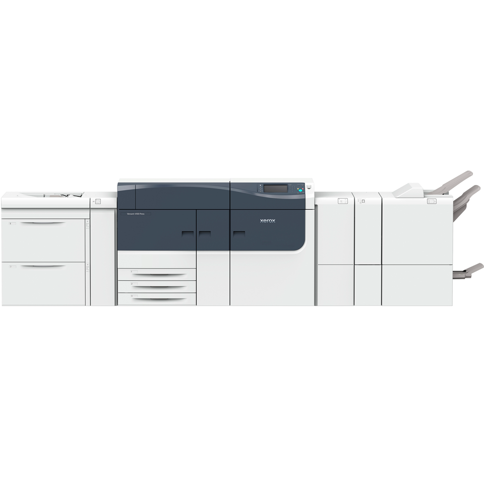
Xerox Versant® 4100 Press
Akıllı Otomasyon, Ağır Gramaj Gücü ve 100 ppm Kusursuz Renkler
- 52 ila 400 g/m² arasındaki kuşe ve dokulu kağıtlarda hız düşürmeden 100 ppm kesintisiz üretim.
- Full Width Array (FWA) ile otomatik ön-arka çakışma, spektrofotometrik renk profili ve homojenlik kontrolü.
- 330 x 1200 mm banner desteği ve 7.000 yapraklık XLS vakumlu besleyici seçeneği.
- Düşük eriyikli EA Kuru Mürekkep ile ofset parlaklığı ve mat yüzey kontrolü.
| Baskı Hızı | 100 sayfa/dk (A4), 52 sayfa/dk (A3) |
| Gramaj Aralığı | 52 - 400 g/m² (Otomatik Çift Taraflı 400 gsm) |
| Çözünürlük | 2400 x 2400 dpi VCSEL ROS / 10-bit |
| Maks. Ebat | 330 x 1200 mm XLS Banner Desteği |
| Otomasyon | Full Width Array (FWA) Spektrofotometre |
| Önerilen Hacim | 350.000 sayfa/ay (Tepe: 1.8M) |
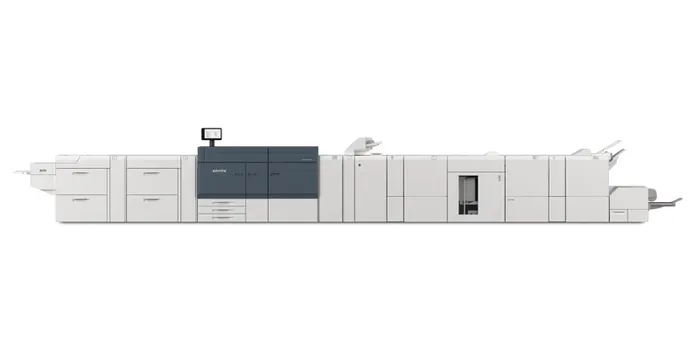
Xerox Proficio™ PX500
100 ppm Hız, 5. Renk İstasyonu ve Gelişmiş PredictPrint Otomasyonu
- Tüm onaylı medya türlerinde (52-400 gsm) hız kaybı yaşamadan 100 ppm kesintisiz üretim gücü.
- 5. Renk İstasyonu: Floresan Pembe, Clear şeffaf vernik ve Low Gloss Clear özel efektleri.
- PredictPrint Media Manager yapay zekası ile barkod okutarak saniyeler içinde mükemmel makine ayarı.
- Full Width Array ve Quality Control Module ile kapalı devre gerçek zamanlı renk doğruluğu.
| Baskı Hızı | 100 sayfa / dakika (Tüm gramajlarda sabit) |
| Çözünürlük | 2400 x 2400 dpi LED Imaging / 10-bit RIP |
| 5. Renk Desteği | Floresan Pembe, Clear Vernik, Low Gloss |
| Gramaj Aralığı | 52 - 400 gsm (Otomatik Çift Taraflı 400 gsm) |
| Maks. Afiş Ebadı | 330 x 1300 mm ekstra uzun banner |
| Kağıt Kapasitesi | 5.900 yaprak standart, 9.900 azami |
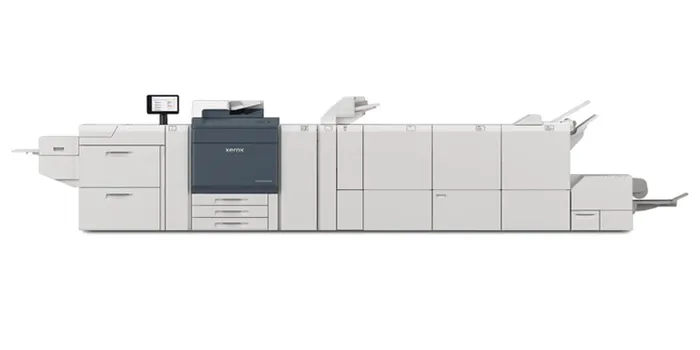
Xerox Proficio™ PX300
85 ppm Hız, 5. Renk Desteği, Dahili 200 ipm Tarayıcı ve Kompakt Üretim
- 85 ppm üretim hızı ve 750.000 sayfa/ay görev döngüsü ile yüksek kompakt verimlilik.
- Entegre 200 ipm tek geçişli çift taraflı yüksek hızlı renkli tarayıcı ve fotokopi merkezi.
- İsteğe bağlı 5. Renk İstasyonu: Floresan Pembe, Clear ve Low Gloss Clear vernik efektleri.
- 52 - 400 gsm kağıt desteği, otomatik çift taraflı 350 gsm ve 330 x 1300 mm banner.
| Baskı Hızı | 85 sayfa / dakika (A4) |
| Çözünürlük | 2400 x 2400 dpi LED Imaging / 10-bit RIP |
| Tarayıcı Hızı | 200 ipm tek geçişli çift taraflı renkli tarama |
| 5. Renk Desteği | Floresan Pembe, Clear Vernik, Low Gloss |
| Gramaj Aralığı | 52 - 400 gsm (Dubleks 350 gsm) |
| Maks. Tabaka | 330 x 1300 mm ekstra uzun banner |

Xerox PrimeLink® C9200 Serisi
65 - 81 ppm Hız, 330 x 1300 mm Afiş Desteği ve 270 ipm Yüksek Hızlı Tarayıcı
- Model seçenekleri: C9265 (65 ppm), C9275 (75 ppm) ve C9281 (81 sayfa/dk renkli ve mono).
- Tek geçişli çift taraflı 270 ipm ultra hızlı renkli tarayıcı ve güvenli kurumsal doküman yönetimi.
- 330 x 1300 mm (13 x 51 inç) ekstra uzun afiş ve 350 g/m² otomatik çift taraflı baskı.
- Xerox Adaptive CMYK Plus yükseltme kiti ile Altın, Gümüş, Beyaz, Şeffaf ve Floresan toner kullanımı.
| Baskı Hızı | 65 / 75 / 81 sayfa/dk (Renkli & S/B) |
| Tarayıcı Hızı | 270 ipm çift taraflı tek geçişli tarama |
| Çözünürlük | 2400 x 2400 dpi Ultra HD |
| Medya Gramajı | 52 - 400 g/m² (Otomatik Çift Taraflı 350 g/m²) |
| Maks. Afiş Ebadı | 330 x 1300 mm (220 g/m² afiş desteği) |
| Özel Efektler | Adaptive CMYK Plus Kiti (Altın/Gümüş/Beyaz/Şeffaf) |

Xerox PrimeLink® B9100 Series
100 - 136 ppm S/B Hız, 3 Milyon Sayfa Görev Döngüsü ve Endüstriyel Güvenlik
- Model seçenekleri: B9100 (100 ppm), B9110 (110 ppm), B9125 (125 ppm) ve B9136 (136 sayfa/dk).
- Aylık 3 milyon sayfa görev döngüsü ve 700.000 sayfaya varan önerilen aylık üretim kapasitesi.
- 270 ipm tek geçişli çift taraflı yüksek hızlı renkli/mono tarayıcı ve 250 yapraklık ADF.
- Plockmatic Pro kitapçık yapıcı, GBC eWire tel ciltleme ve Tape Binder inline ciltleme modülleri.
| Baskı Hızı (A4) | 100 / 110 / 125 / 136 sayfa/dakika |
| Baskı Hızı (A3) | 50 / 55 / 62 / 68 sayfa/dakika |
| Çözünürlük | 2400 x 2400 dpi (106 lpi - 200 lpi tram) |
| Tarayıcı Hızı | 270 ipm çift taraflı tek geçişli (600 x 600 dpi) |
| Medya Gramajı | 60 - 350 g/m² |
| Maks. Tabaka | 330 x 660 mm ekstra uzun tabaka |
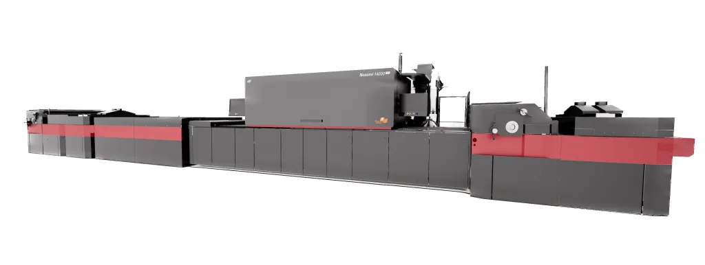
EFI™ Nozomi 14000 LED / AQ Serisi
Oluklu Mukavva ve Ambalajda Tek Geçişli (Single-Pass) Devrim
- Tek geçişte (Single-pass) tüm renkleri anında basarak saatte binlerce metrekare üretim.
- Kalıpsız dijital ambalaj üretimi ile sıfır klişe masrafı ve anında teslimat.
- Gıdaya uygun kokusuz su bazlı (AQ) veya yüksek parlaklıklı LED UV mürekkep seçeneği.
- Mikro flütten çift dalga olukluya (E, B, C, EB flüt) kadar sorunsuz besleme.
| Maks. Hat Hızı | 75 lineer metre / dakika |
| Baskı Eni | 1.40 m (Nozomi 14000) / 1.70 m (17000) |
| Renk Konfigürasyonu | CMYK + W + Turuncu + Menekşe |
| Malzeme Kalınlığı | 0.8 mm - 3.2 mm oluklu mukavva |
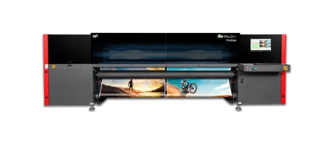
EFI™ Pro 32r+ Roll-to-Roll UV LED
3.2 Metre Rulo Baskıda Üstün LED UV Verimliliği
- UltraDrop™ 7 pL piezo teknolojisi ile pürüzsüz ten tonları ve mikro keskinlik.
- Dahili sensörlü otomatik çift taraflı (day-night backlit) baskı kabiliyeti.
- Baskı esnasında kenar tıraşlama yapan entegre dilimleme (slitter) bıçakları.
- Soğuk LED UV kürleme ile ısıya duyarlı ince folyolarda sıfır deformasyon.
| Baskı Genişliği | 3.20 metre (126 inç) |
| Üretim Hızı | 256 m²/saat maksimum |
| Çözünürlük | 1200 dpi gerçek çözünürlük |
| Mürekkep | CMYK + Çift Beyaz (White Ink) |
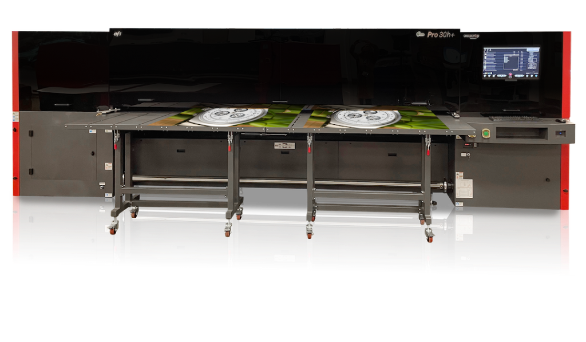
EFI™ Pro 30h+ Hibrit LED UV
Hem Sert Plaka Hem Esnek Rulo: Tek Gövdede Hibrit Güç
- Dakikalar içinde sert levha masasından rulo besleme moduna kolay dönüşüm.
- 5 cm kalınlığa kadar pleksi, ahşap, alüminyum ve fotobloklara doğrudan baskı.
- Çok katmanlı baskı (Renk-Beyaz-Renk) ile şeffaf malzemelerde kusursuz görünüm.
- Güçlü çok bölgeli vakum tablası ile eğri malzemeleri düzleştirme özelliği.
| Baskı Genişliği | 3.20 metre |
| Maks. Kalınlık | 5.08 cm (2 inç) |
| Hız Kapasitesi | 235 m²/saat |
| Mürekkep | EFI ProGraphics LED UV (CMYK+WW) |
Araç kaplama, folyo tabela, dış mekan branda ve yüksek dayanımlı solvent rulo üretimi
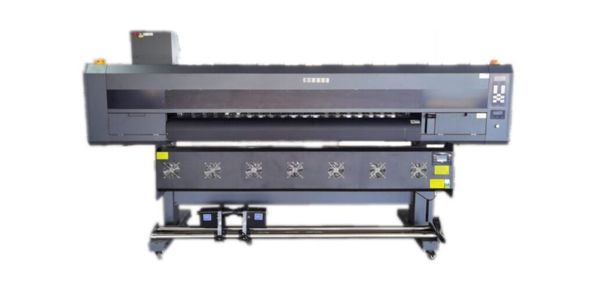
Keundo K1-16S & K2-18S
1.6m ve 1.8m Genişlikte Epson i3200-E1 Kafa Gücüyle Profesyonel Üretim
- K1-16S: Tek Epson kafa ile ekonomik, kararlı ve yüksek kaliteli 1.6 metre rulo baskı.
- K2-18S: Çift kafa konfigürasyonu ile saatte 65 m²'ye varan yüksek hızlı dış mekan üretimi.
- Ön, orta ve arka kademeli dijital ısıtma tablaları ile mürekkebin yüzeye kusursuz tutunması.
- Güneş ışığı, yağmur ve UV koşullarına karşı ek laminasyonsuz 3 yıla varan renk canlılığı.
| Baskı Eni | 1600 mm (K1-16S) / 1800 mm (K2-18S) |
| Baskı Kafası | Tek veya Çift Epson i3200-E1 piezo |
| Maksimum Çözünürlük | 3200 dpi mikro damlacık |
| Isıtıcı Sistemi | 3 bölgeli bağımsız akıllı kurutma |
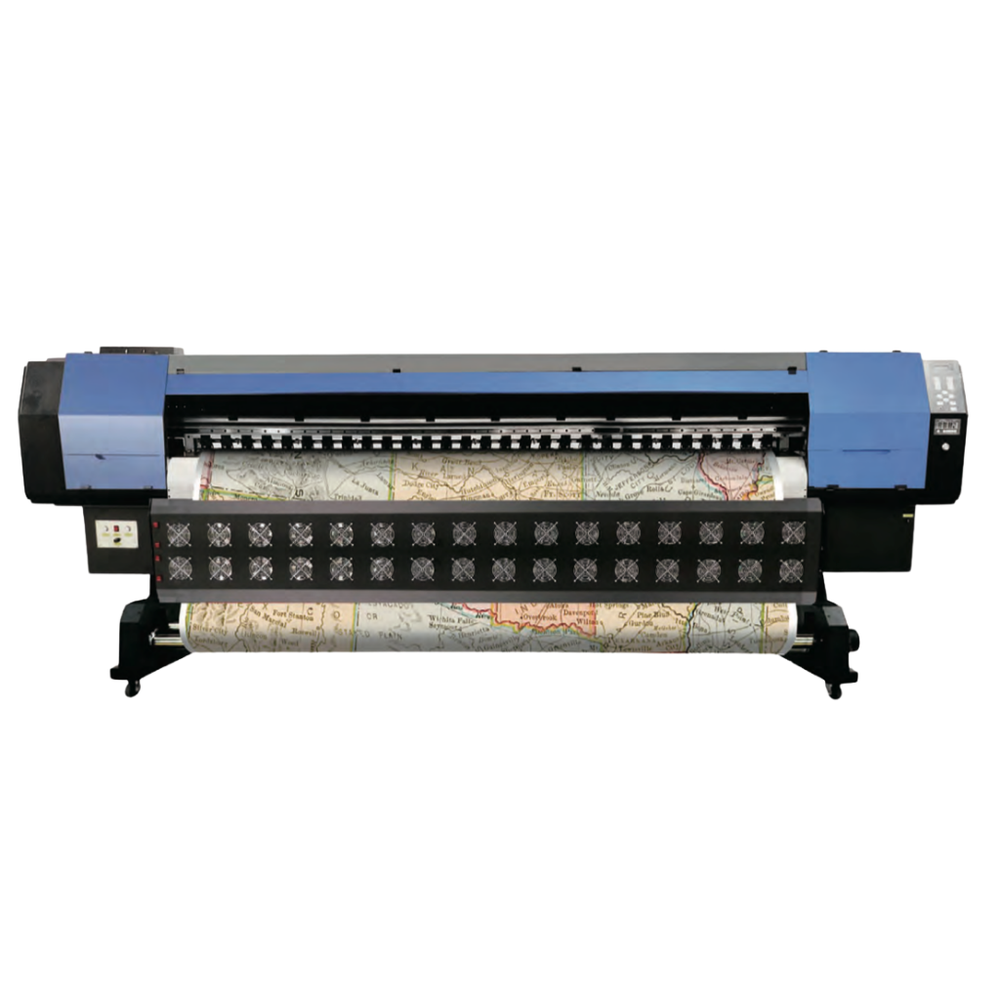
Keundo K4-18S & K4-3204S
4 Kafa Gücü, 8 Renk Desteği ve 3.2 Metre Süper Geniş Endüstriyel Platform
- K4-18S: 4 baskı kafası ve 8 renk desteği ile fotoğrafik pürüzsüz geçişler ve seri üretim.
- K4-3204S: Dikişsiz 3.2 metre dev vinil branda ve bina cephe giydirme afişleri.
- Japon THK yüksek hassasiyetli sessiz lineer ray mimarisi ve ağır sanayi tipi çelik şase.
- 3 litrelik dökme mürekkep tankları ile uzun süreli operatörsüz çalışma ve düşük maliyet.
| K4-3204S Eni | 3200 mm (3.2 metre) |
| K4-18S Eni | 1800 mm (1.8 metre) |
| Kafa Sayısı | 4 adet endüstriyel piezo kafa |
| Rulo Çekme | Ağır yük çift motorlu tansiyon ünitesi |
Masaüstü silindirik şişe baskısından 3.2x2.0m dev endüstriyel levha plakalarına kadar tam çözümler
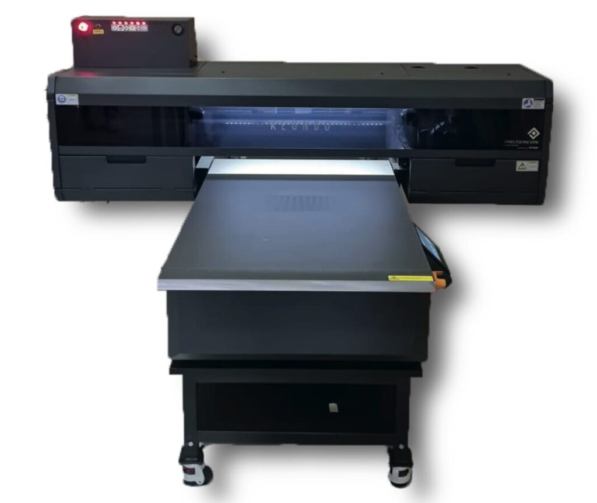
Keundo K6090UV
600 x 900 mm Alanda 3D Dokulu Kabartma ve 360° Döner Şişe/Termos Aparatı
- Özel rotary aparatı ile termos, matara, kupa, şişe ve mumlara 360 derece kesintisiz baskı.
- CMYK + Beyaz + Vernik (Gloss Varnish) ile dokulu kabartma ve Braille görme engelli alfabesi.
- 150 mm kalınlığa kadar ahşap kutular, telefon kılıfları, plaketler ve sert zemin objeler.
| Baskı Alanı | 600 x 900 mm |
| Baskı Yüksekliği | 150 mm (15 cm) dikey aralık |
| Mürekkep Cinsi | LED-UV kürlemeli sert/esnek mürekkep |
| Efekt Yeteneği | Lokal parlak vernik & 3D kabartma |
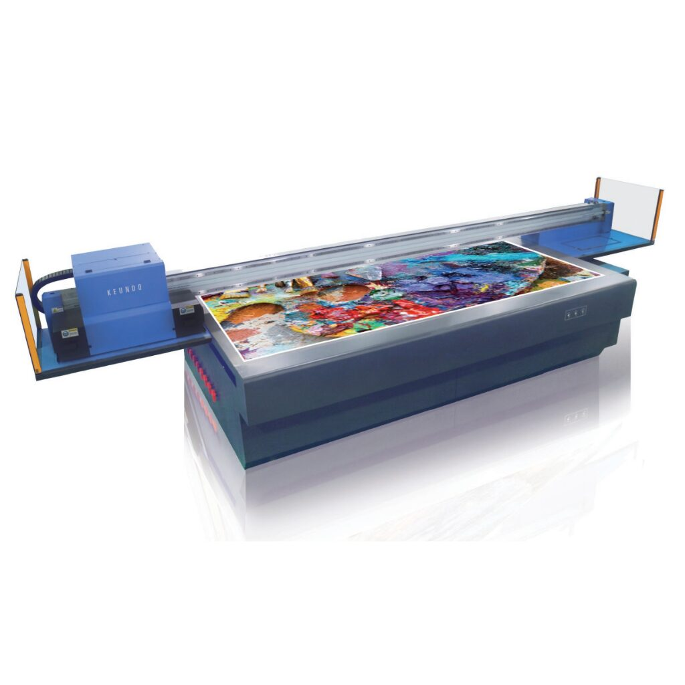
Keundo SQ-2513 & SQ-3220
2.5x1.3m ve 3.2x2.0m Plaka Alanında 5x Ricoh Gen6 Endüstriyel Hız
- SQ-2513: Standart 2.5x1.3m plakalar için 2400 dpi hassasiyetinde yüksek verimli flatbed.
- SQ-3220: 205x305 cm devasa levhaları kesmeden tek seferde basan süper geniş düz yatak.
- Ters üflemeli hava yastığı ile 150 kg'lık cam ve MDF plakaları zahmetsizce kaydırma.
- Bağımsız vakum bölgeleri ve otomatik malzeme kalınlık dedektörü ile sıfır kafa çarpma riski.
| Tabla Formatları | 2500 x 1300 mm / 3200 x 2000 mm |
| Baskı Kafası | Ricoh Gen5 / Gen6 endüstriyel piezo |
| Çözünürlük | 2400 dpi maksimum netlik |
| Medya Kalınlığı | 100 mm'ye kadar rijit malzeme |
Vakumlu konveyör taşıma bandı ile hem esnek rulo hem sert plakaları tek makinede basma gücü
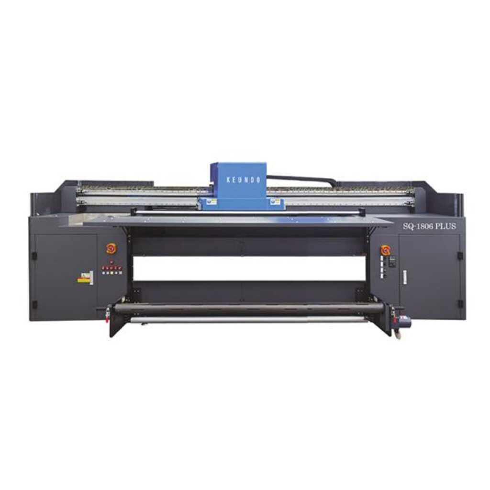
Keundo SQ-1800H & SQ1806 Plus
1.8 Metre Konveyörlü Hibrit UV: Ricoh Gen6 ve 6x Epson Kafa Seçenekleri
- SQ-1800H: 5 adet Ricoh Gen6 kafa ile ağır hizmet tipi endüstriyel rulo ve plaka üretimi.
- SQ1806 Plus: 6 adet Epson kafa mimarisi ile fotoğrafik renk doygunluğu ve yüksek detay.
- Açılır-kapanır katlanabilir uzatma tablaları ile hem yer tasarrufu hem 50 mm levha desteği.
| Baskı Eni | 1800 mm konveyör bant |
| Kafa Seçenekleri | 5x Ricoh Gen6 veya 6x Epson piezo |
| Kürleme | Su soğutmalı enerji tasarruflu LED UV |
| Maks. Kalınlık | 50 mm rijit malzeme |
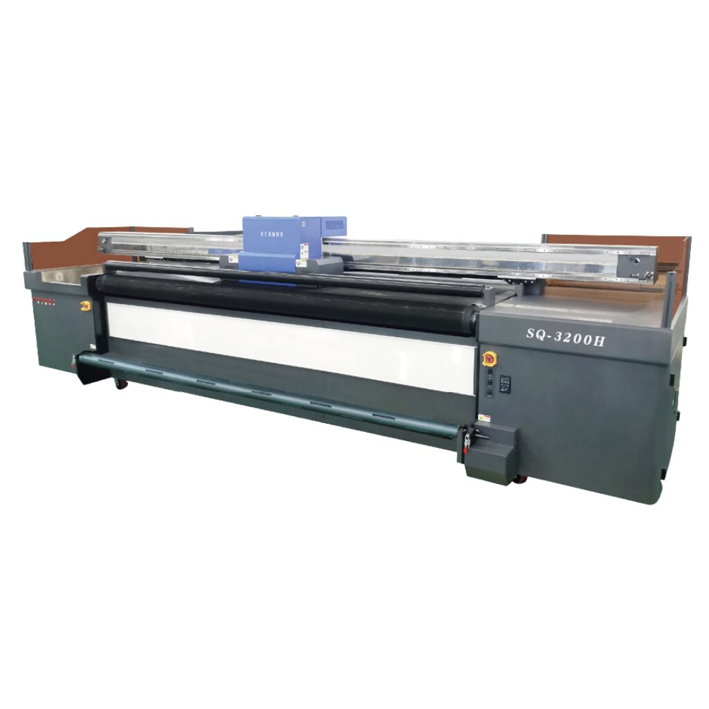
Keundo SQ2500H & SQ3200H
2.5m ve 3.2m Süper Geniş Konveyörlü Hibrit UV ve 5x Ricoh Gen6 Gücü
- 3.2 metreye varan genişlik ile hem süper geniş rulo vinil/kumaş hem 2x3m sert paneller.
- Ağır hizmet tipi vakumlu konveyör bant sistemi ile malzemeyi kaydırmadan milimetrik taşıma.
- Gelişmiş çift negatif basınç kontrolü ve otomatik kafa çarpışma sensörleri.
| Genişlikler | 2500 mm (SQ2500H) / 3200 mm (SQ3200H) |
| Kafa Donanımı | 5 adet Ricoh Gen6 endüstriyel kafa |
| Renk Dizilimi | CMYK + Beyaz + Vernik |
| Bant Yapısı | Pnömatik tansiyonlu ağır konveyör |
Anında kuruyan, kokusuz, gergi tavan, ışıklı tekstil ve 5 metre süper geniş rulo LED-UV presleri
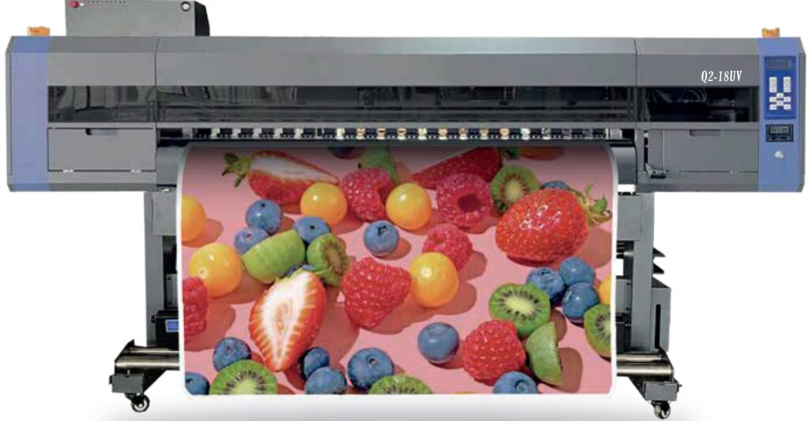
Keundo Q1 / Q2 / Q4 Serisi LED-UV
1.6m ve 1.8m Eninde Çift/4 Kafa, Beyaz & Vernik Çok Katmanlı Rulo LED-UV
- Q1-16UV: 1.6m kompakt rulo LED-UV, CMYK ve beyaz desteğiyle kokusuz üretim.
- Q2-18UV: 1.8m çift kafa ile eşzamanlı renk + beyaz çift taraflı vitrin filmi baskısı.
- Q4-18UV: 4 kafa ile yüksek üretim hızı, kabartmalı vernik ve çok katmanlı efektler.
- Isıya duyarlı ince folyo, şeffaf film ve kumaşlarda sıfır çekme ve deformasyon.
| Genişlikler | 1600 mm (Q1) / 1800 mm (Q2 & Q4) |
| Kafa Adetleri | 1, 2 veya 4 adet Epson kafa |
| Kurutma | Anında sertleşen LED UV lambalar |
| Katman Modu | Renk-Beyaz-Renk (Day & Night) |
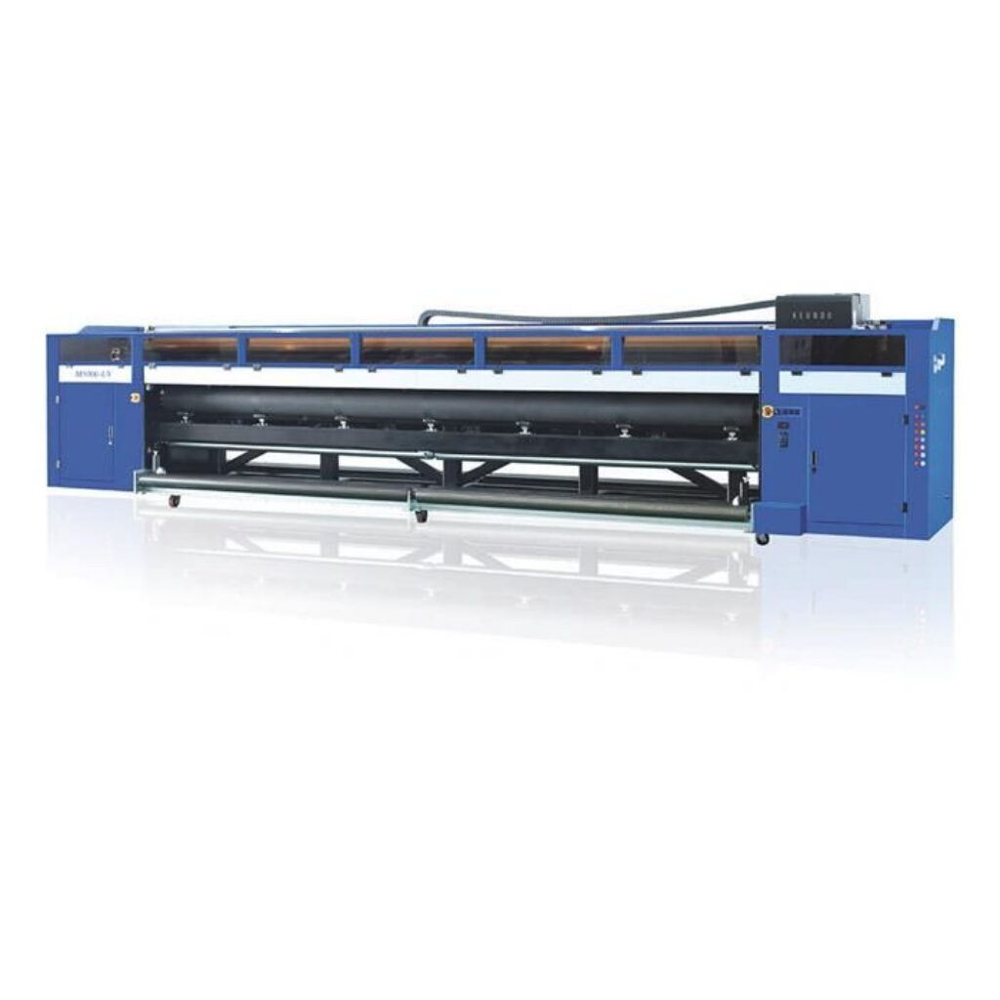
Keundo Q4-32UV & M3200 / M5000
3.2m ve 5.0m Süper Geniş Rulo UV Preslerde 5x Ricoh Gen6 Endüstriyel Hız
- Q4-32UV: 3.2m ebadında 4x Epson i3200-U1 kafa ile fotoğrafik ışıklı kumaş ve tabela üretimi.
- M3200 & M5000: 3.2m ve 5.0m ebadında 5x Ricoh Gen6 kafa ile ağır sanayi tipi rulo UV presleri.
- Dikişsiz 5 metre eninde havalimanı dev panoları ve mega bina giydirme reklamları.
| Maksimum Enler | 3200 mm (M3200 / Q4-32) / 5000 mm (M5000) |
| Kafa Seçenekleri | 5x Ricoh Gen6 veya 4x Epson i3200-U1 |
| Rulo Yükleme | Pnömatik hava şaftlı ağır tonaj sarıcı |
| Çalışma Modu | 24 saat seri endüstriyel üretim |
Yüksek hacimli kitap basımı, yayıncılık, resmi evrak ve veri odaklı direkt posta üretimi

Flora Phenix 440 / 440C
100 m/dk Hız ve Çift Taraflı Baskıyla Yüksek Hacimli Endüstriyel Bobin Inkjet
- Dakikada 100 metre (673 A4 sayfa) kesintisiz hız ile yüksek tirajlı yayıncılık ve kitap baskısı.
- Micro piezoelectric grayscale kafa mimarisi ile 1200 dpi çözünürlük ve derin metin keskinliği.
- Su bazlı çevre dostu pigment mürekkep formülü ile ışığa ve neme dayanıklı solmayan sayfalar.
- 436 mm baskı eni, 45-157 gsm kağıt desteği ve tek geçişte çift taraflı senkronize baskı.
| Model Kodu | Flora Phenix 440 (Mono) / 440C (Renkli) |
| Maksimum Hız | 100 m/dk (673 A4 sayfa/dk) |
| Çözünürlük | 1200 x 600 / 1200 x 1200 dpi |
| Baskı Eni | 436 mm (Medya Eni: 460 mm) |
| Kafa Mimarisi | Micro Piezoelectric Grayscale |
| Kağıt Gramajı | 45 – 157 gsm (Ofset & Kitap Kağıdı) |
| Baskı Modu | Çift Taraflı (Duplex) Senkronize |
| Mürekkep Cinsi | Su bazlı çevre dostu pigment mürekkep |

Flora Swift 440
120 m/dk ve 808 A4/dk Kapasiteyle S/B Kitap & Veri Üretim Canavarı
- Dakikada 120 metre ve 808 A4 sayfalık rekor çıktı hızı ile kitap ve sözleşme üretiminde rakipsiz.
- Yoğun siyah-beyaz kitap ve resmi evrak üretimleri için optimize edilmiş yüksek hızlı rulo baskı.
- Micro piezoelectric grayscale kafa mimarisi ile derin siyahlar ve net küçük punto yazılar.
- 460 mm baskı eni, 45-157 gsm kağıt desteği ve su bazlı pigment siyah mürekkep.
| Model Kodu | Flora Swift 440 (Mono) |
| Maksimum Hız | 120 m/dk (808 A4 sayfa/dk) |
| Hassas Mod Hızı | 60 m/dk (1200 x 1200 dpi) |
| Baskı Eni | 460 mm (Medya Eni: 460 mm) |
| Kafa Mimarisi | Micro Piezoelectric Grayscale |
| Kağıt Gramajı | 45 – 157 gsm (Ofset & Kitap Kağıdı) |
| Baskı Modu | Çift Taraflı (Duplex) Senkronize |
| Mürekkep Cinsi | Su bazlı çevre dostu pigment siyah mürekkep |

Phenix 330 / 330C
Kompakt Alanlarda Endüstriyel Hız, Kalite ve Çok Yönlü Rulo Esnekliği
- Kompakt yerleşimi sayesinde alan tasarrufu sağlarken endüstriyel hızdan ödün vermez.
- Micro piezoelectric grayscale kafa teknolojisi ve su bazlı pigment mürekkepler.
- Çift taraflı CMYK veya mono mod seçenekleri ile yayın ve etiket uygulamalarında esneklik.
- Geniş kağıt yelpazesine uyum sağlayan hassas rulo tansiyon kontrol ünitesi.
| Baskı Hızı | 100 m/dk |
| Maks. Rulo Eni | 350 mm |
| Çözünürlük | 1200 dpi |
| Mürekkep | Su bazlı pigment mürekkep |
| Modlar | Çift taraflı (Duplex) / Tek taraflı |
Devasa cephe reklamları, tabela, endüstriyel levhalar, cam, ahşap ve sert zemin baskıları

Flora XTRA 5000H UV Hibrit
5 Metrelik Devasa Genişlikte Saatte 440 m² Endüstriyel Güç
- Dikişsiz tek parça 5 metre genişliğinde cephe ve mega billboard afişleri.
- Aynı anda 2 veya 3 farklı rulo malzemeyi yan yana bağımsız olarak basabilme.
- Manyetik lineer motor sürücüsü ile sıfır sürtünme, sessiz ve mikron hassasiyetli hareket.
- 51 mm kalınlığa kadar endüstriyel sert plakaları zahmetsizce işleyen ağır konveyör tabla.
| Baskı Eni | 5000 mm (5.0 metre) |
| Maksimum Hız | 440 m²/saat |
| Maks. Kalınlık | 51 mm |
| Çözünürlük | 2400 dpi |
| Kürleme | Endüstriyel UV LED lambalar |

Flora XTRA 3300H UV Hibrit
3.3 Metre Baskı Eninde Hem Roll Hem Rijit Malzemeler İçin Kusursuz Uyum
- Standart 3.2 m rulo malzemeler ile sert reklam levhalarını tek bir makinede birleştirir.
- 136 m²/saat üretim hızı ile reklam ve tabela atölyelerinin seri işlerinde yüksek kârlılık.
- Gelişmiş UV LED kürleme sistemi ile anında kuruma ve düşük elektrik tüketimi.
- Otomatik yükseklik algılama, pnömatik pozalama pimleri ve çift negatif basınç koruması.
| Baskı Genişliği | 3300 mm (3.3 metre) |
| Maksimum Hız | 136 m²/saat |
| Maks. Kalınlık | 51 mm |
| Çözünürlük | 2400 dpi |
| Renk Sistemi | CMYK + White (Beyaz) |

Flora XTRA 3220LED Flatbed UV
3.2 x 2.0 Metre Devasa Plaka Baskı Alanı ve 219 m²/saat Üretim Gücü
- Standart 205x305 cm akrilik, pleksi ve MDF plakaları bölmeden tek seferde basar.
- 100 mm malzeme kalınlığı desteğiyle kalın ahşap kapılar, metal paneller ve endüstriyel parçalar.
- 8 bağımsız vakum bölgesi ve hava üfleme yastığı ile ağır cam plakaları parmakla kaydırma.
- CMYK, Beyaz ve Vernik ile kabartma, 3D dokulu baskılar ve lüks yüzey finisajları.
| Baskı Alanı | 3200 x 2000 mm |
| Maksimum Hız | 219 m²/saat |
| Malzeme Kalınlığı | 100 mm (10 cm) |
| Çözünürlük | 2400 dpi |
| Vakum Sistemi | 8 bağımsız bölge + Hava üfleme |

Flora Q25 Profesyonel Flatbed UV
2.54 x 1.30 Metre Alanda 4.5 pl Ultra Net Damla ve Çok Katmanlı Vernik
- Standart 125 x 250 cm plakalar için optimize edilmiş yüksek hassasiyetli endüstriyel flatbed.
- 4.5 pl mikro damla boyutu ile fotoğraf kalitesinde pürüzsüz geçişler ve keskin küçük yazılar.
- 6 bölgeli güçlü vakum tablası ile hem küçük promoyon objelerini hem büyük plakaları sabitler.
- Beyaz ve lokal vernik desteği ile 3D kabartma dokular ve dikkat çekici lüks efektler.
| Baskı Alanı | 2540 x 1300 mm |
| Maksimum Hız | 155 m²/saat |
| Damla Boyutu | 4.5 picoliter |
| Çözünürlük | 705 x 2400 dpi |
| Malzeme Kalınlığı | 100 mm |
Kalıpsız dijital dokunsal kabartma, B3 ve B2 formatında parlak lak ve metalik soğuk folyo yaldız
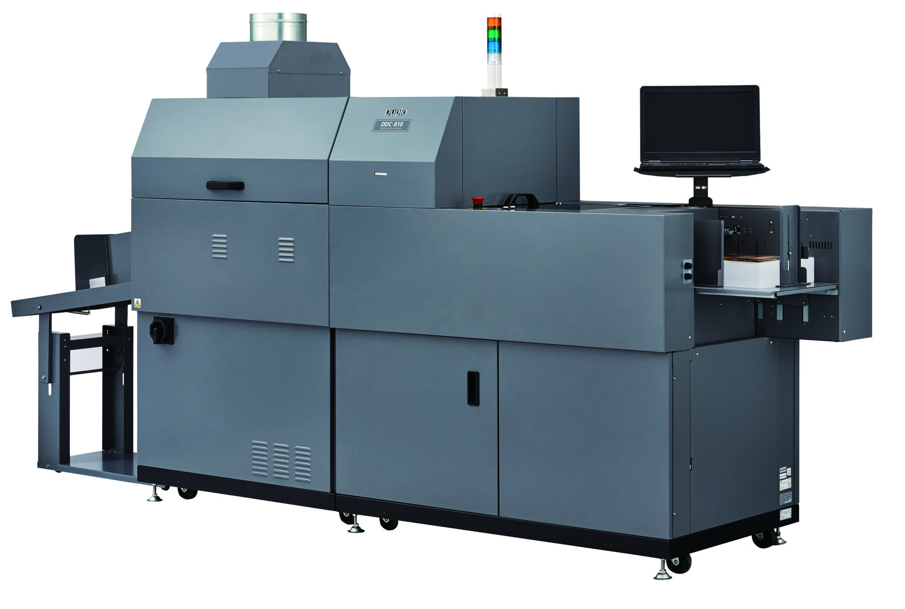
DuSense DDC-810
B3 Formatında 600 dpi Hassasiyetle 3D Dokunsal Kabartma Lak
- Kalıpsız, serigrafi ipeği gerektirmeden doğrudan dijital spot lak ve dokunsal kabartma.
- CCD kameralar kağıt çekmesini tespit ederek mikron düzeyinde birebir baskı üstü hizalama yapar.
- Tek geçişte hem ince saten yüzeyler hem de yüksek kabartmalı lüks efektler oluşturur.
- Kitap kapakları, kartvizitler, kozmetik kutuları ve lüks davetiyeler için idealdir.
| Maksimum Ebat | 364 x 740 mm |
| Lak Kalınlığı | 20 - 80 mikron değişken kabartma |
| Çözünürlük | 600 x 600 dpi inkjet kafa mimarisi |
| Kürleme | Dahili UV lamba sistemi |
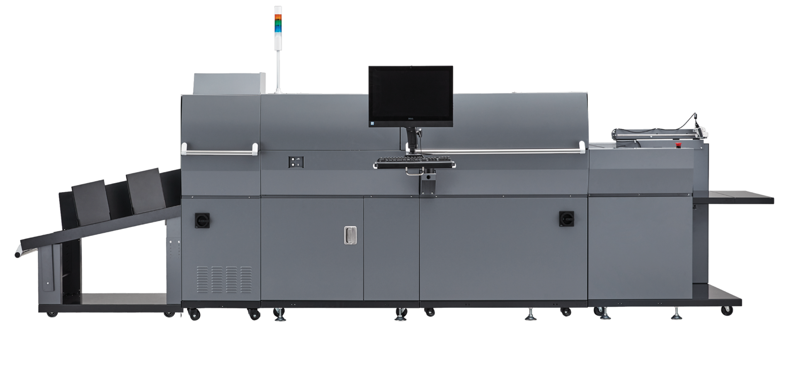
DuSense DDC-8000
B2 Formatında Çift Barlı 3D Kabartma Lak ve Entegre Soğuk Folyo Yaldız
- B2 ebadında büyük tabakalara tek geçişte hem kabartma lak hem metalik folyo yaldız uygular.
- Otomatik kalınlık algılama sensörleri ile farklı yüzeylerde baskı kafasını mükemmel korur.
- Altın, gümüş, holografik folyolar ile katma değeri yüksek ambalaj üretimi sağlar.
- Yoğun ticari matbaalar ve ambalaj üreticileri için yüksek kapasiteli amiral gemisi.
| Maksimum Ebat | 585 x 1068 mm (B2+) |
| Medya Gramajı | 160 - 600 g/m² karton ve lamine tabaka |
| Yaldız Modülü | Entegre soğuk folyo ünitesi |
| Kafa Sistemi | Endüstriyel çift barlı inkjet mimarisi |
Tek geçişte boy kesim, en kesim, çatlamasız kırım, perforasyon ve katlama sistemleri
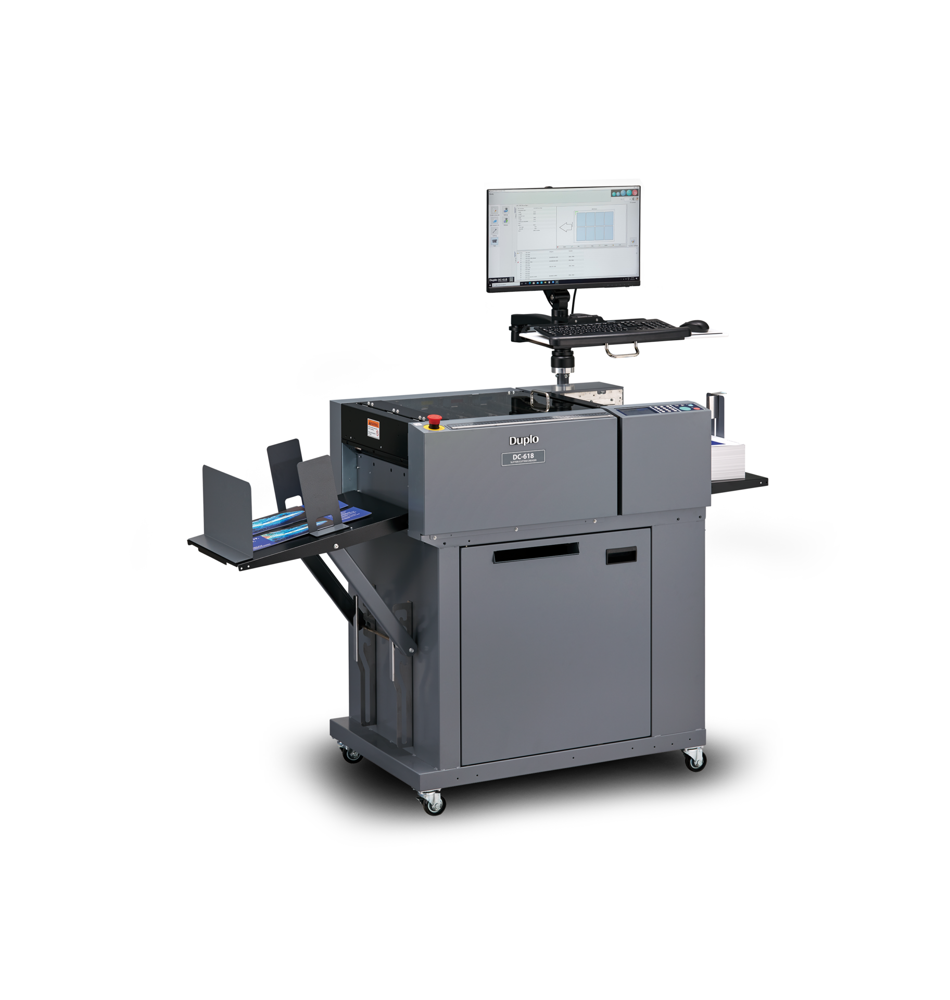
Duplo DC-618
Kompakt Alanda Tek Geçişte 6 Boy Kesim, 30 Kırım ve Çatlamasız Katlama
- Kuşe kağıtlarda katlama esnasında tonerin çatlamasını ve kırılmasını tamamen engeller.
- Barkod okuyucu tabaka üzerindeki iş kodunu tanır ve bıçakları saniyeler içinde otomatik hizalar.
- Tek tabakadan 24 adet kartviziti kesilmiş ve paketlenmiş olarak çıkarır.
- Giyotin, perforatör ve manuel pilyaj makinelerinin tüm iş yükünü tek başına devralır.
| İşlem Yeteneği | 6 boy kesim, 30 en kesim, 20 pilyaj |
| Hız | Dakikada 50 tabaka |
| Maksimum Ebat | 370 x 750 mm (1200 mm opsiyon) |
| Gramaj Aralığı | 110 - 400 g/m² |
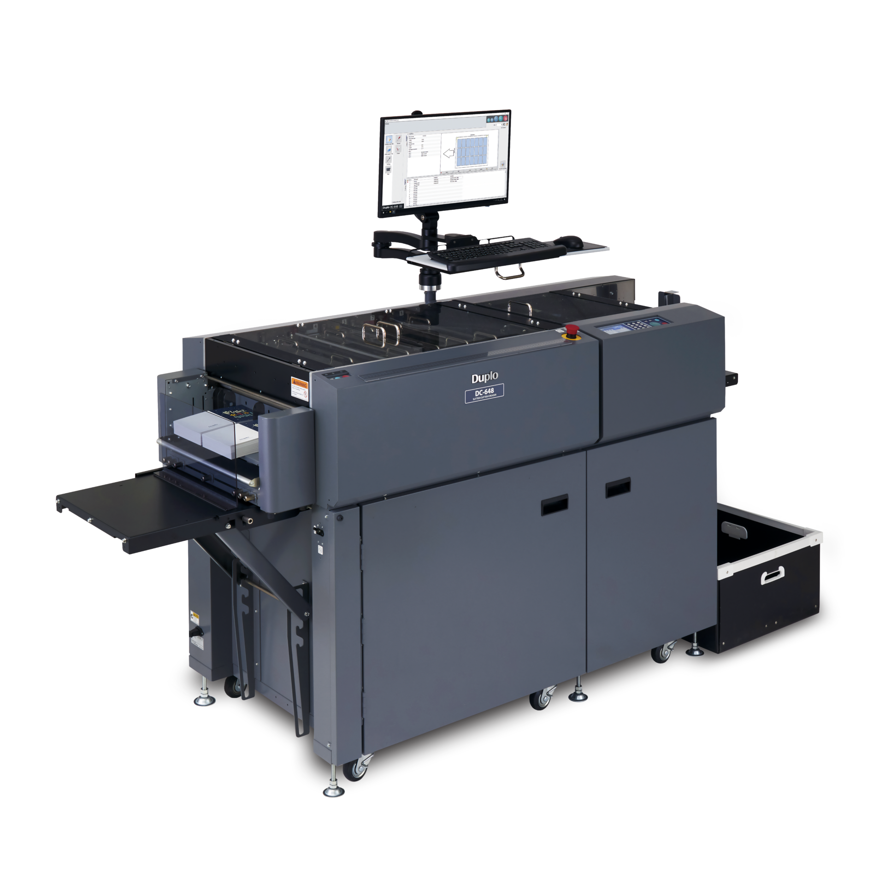
Duplo DC-648
Modüler Döner Kesim, 1000 mm Uzun Tabaka ve Ağır İş Akışı
- 1000 mm'ye kadar ekstra uzun banner tabakalarını tek geçişte keser, dilimler ve pilyajlar.
- İsteğe bağlı döner perforasyon, mikro-perforasyon ve bölümlü pilyaj kasetleri ile tam esneklik.
- Çıkan kenar atık şeritlerini otomatik olarak dahili çöp haznesine tahliye eder.
| Maksimum Ebat | 370 x 1000 mm |
| Gramaj | 110 - 400 gsm |
| Besleme Yüksekliği | 120 mm derin tepsi |
| Atık Ayrıştırma | Dahili konveyörlü atık tahliyesi |
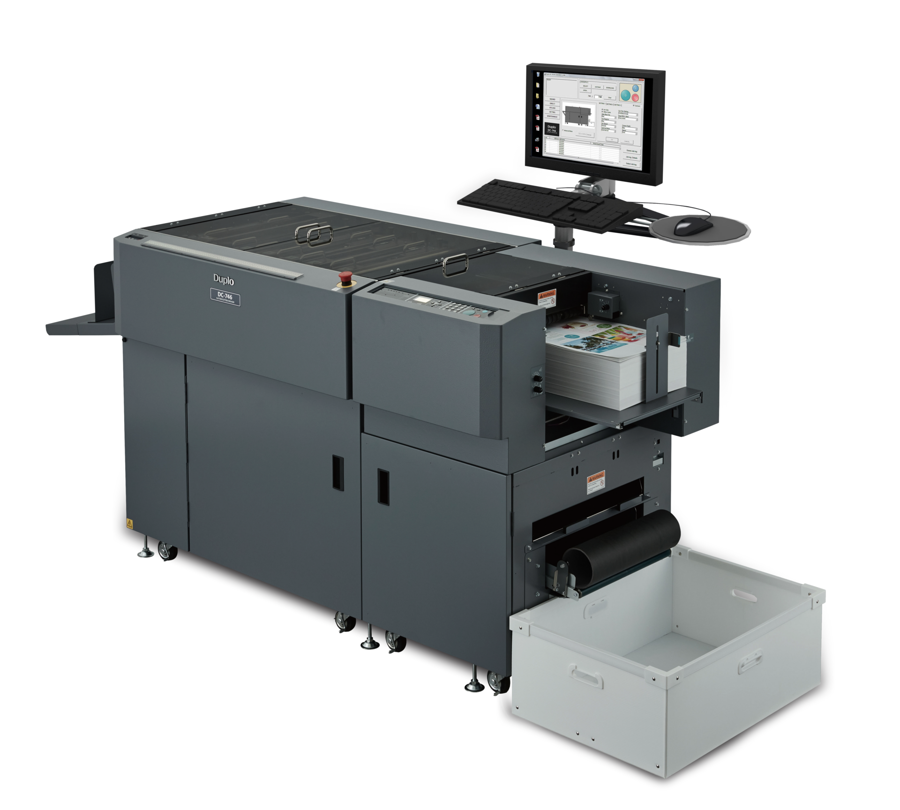
Duplo DC-746
JDF Uyumlu, Maksimum Otomasyonlu Ağır Hizmet Tipi Sonlandırma Merkezi
- Yüksek hacimli dijital baskı presleriyle (HP Indigo, Xerox) JDF üzerinden kusursuz entegrasyon.
- CCD kamera sistemi baskı kaymalarını hem X hem Y ekseninde gerçek zamanlı dengeler.
- Tak-çıkar modüler kasetler ile kartvizit, kupon perforatörü ve katlama arasında anında geçiş.
| Maksimum Format | 370 x 750 mm (1000 mm ops.) |
| Hız | 50 tabaka/dakika |
| Gramaj | 110 - 400 gsm |
| Otomasyon | JDF & Barkod entegrasyonu |
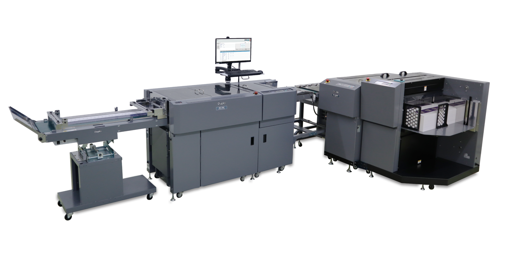
Duplo DC-20K B2 & DC-F100
B2 Ebadında Otomatik Dilimleme/Pilyaj ve In-line Entegre Katlama Çözümleri
- DC-20K B2: 750 x 530 mm boyutundaki B2 ofset/dijital tabakaları giyotine girmeden doğrudan işler.
- DC-F100: DC serisine bağlanarak pilyajı açılmış tabakaları tek geçişte mektup veya akordiyon katlar.
- Büyük format preslerden çıkan tabakaları tek hamlede paketlemeye hazır hale getirir.
| DC-20K Formatı | 750 x 530 mm (B2) |
| Besleme Kapasitesi | 150 mm yığın yüksekliği |
| DC-F100 Modu | Tek kırım, mektup, z-kırım |
| Uyumlu Sistemler | DC-746, DC-648 serileri |
Harmanlama, tel dikiş, katlama, ön kenar kesim, kare sırt aparatı ve eyer tipi dikiş sistemleri
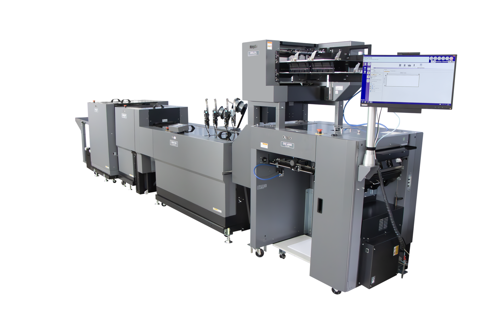
Duplo DBM-700 Booklet System
Saatte 5.200 Kitapçık, 50 Tabaka (200 Sayfa) Kalın Dikiş ve Kare Sırt
- Duplo'nun en yüksek kapasiteli endüstriyel tel dikiş ve kitapçık yapma hattıdır.
- Kare Sırt (Square Spine) ünitesi ile tel dikişli kitapçığa Amerikan cilt sırtı görünümü kazandırır.
- Ağır gramajlı kuşe kapakları ve 200 sayfaya kadar olan kalın katalogları mükemmel zımbalar.
| Maksimum Hız | 5.200 kitapçık / saat |
| Dikiş Kapasitesi | 50 yaprak (200 sayfa) |
| Besleme Formatı | 356 x 650 mm tabaka ebadı |
| Sırt Formu | Standart dikiş + Kare sırt (Square spine) |
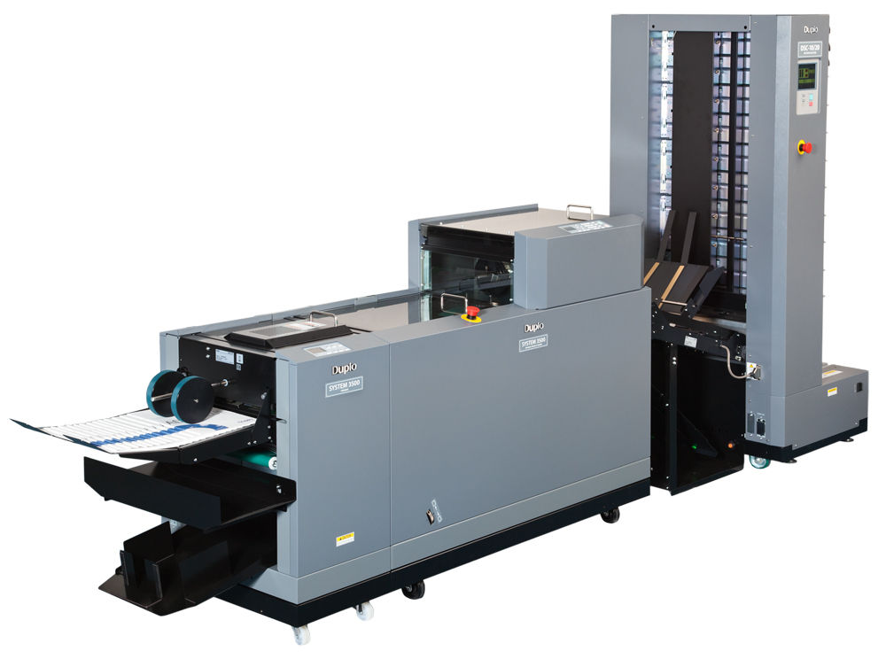
Duplo DBM-350 / DBM-150
Kompakt ve Orta Hacimli İşletmeler İçin Tam Otomatik Kitapçık Hatları
- DBM-150: Dünyanın en kompakt tam otomatik kitapçık sistemi; okullar ve ofisler için ideal.
- DBM-350: Yoğun dijital matbaalar için saatte 3.000 kitapçık üreten sağlam tel dikiş mekanizması.
- Otomatik ön kenar tıraşlama bıçağı ile jilet gibi düzgün kitapçık kenarları çıkarır.
| DBM-350 Hızı | Saatte 3.000 kitapçık (30 tabaka dikiş) |
| DBM-150 Hızı | Saatte 2.400 kitapçık (25 tabaka dikiş) |
| Ayar Süresi | Dokunmatik ekrandan tam otomatik geçiş |
| Dikiş Tipi | Çift zımba başlığı + Sırt katlama |
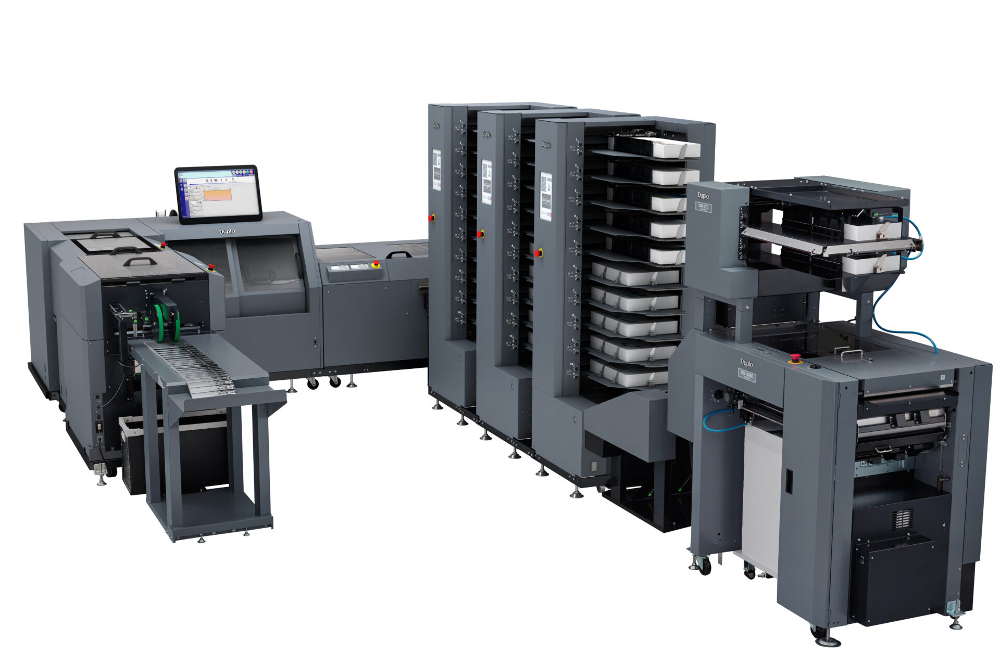
Duplo iSaddle Range
A4 Yatay (Landscape) Kitapçık ve Geleneksel Eyer Tipi Dikiş Mükemmelliği
- Mimari sunumlar ve fotoğraf albümleri için popüler olan A4 yatay kitapçıkları tam hızda diker.
- Eyer tipi taşıma sistemi sayesinde tabakalar sırtından katlanıp dikilerek sıfır kabarma sağlar.
- DSC-10/60i vakumlu harmanlama kuleleri ile ofset ve dijital formaları tek hatta birleştirir.
| Özel Yetenek | A4 Landscape (Yatay) tam boy kitapçık |
| Dikiş Prensibi | Geleneksel eyer tipi (Saddle stitching) |
| Besleyici | Çoklu vakumlu harmanlama kulesi entegrasyonu |
| Gramaj Uyumu | Kuşe kapak ve ince iç sayfalar ile tam uyum |
Kalıpsız dijital bıçaklı kesim masaları, döner manyetik silindirli kalıp kesim ve B2 çelik kurallı kesiciler
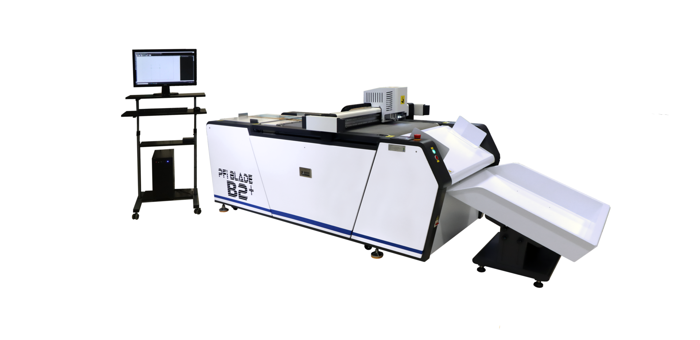
Duplo PFi Blade B2+ / B3+
Kalıpsız, Bıçak Masrafsız Otomatik Dijital Kesim, Pilyaj ve Çizim Masası
- Pahalı bıçak kalıplarına gerek kalmadan bilgisayardaki vektör çizimi (DXF/PLT) okuyarak kesim yapar.
- Kesim bıçağı, teğetsel bıçak, pilyaj tekeri ve çizim kalemi takımları ile tam donanımlıdır.
- Karton kutular, etiketler, köpük, PVC ve mıknatıslı tabakalarda 1.5 mm derinliğe kadar çalışır.
- Otomatik vakumlu tabaka besleyicisi ile operatörsüz seri kutu ve etiket üretimi sağlar.
| B2+ Çalışma Alanı | 800 x 600 mm (B3+: 600 x 400 mm) |
| Maks. Kesim Hızı | 1.200 mm/saniye |
| Kesim Kalınlığı | 1.5 mm'ye kadar (karton, oluklu, pvc) |
| Pozalama | Otomatik kayıt işaretli CCD kamera |
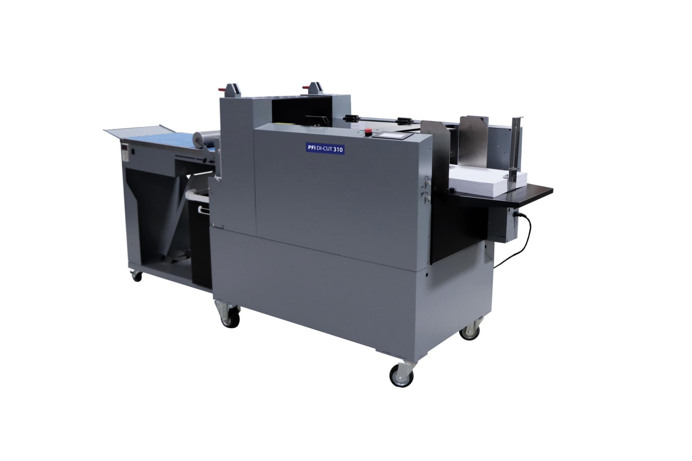
PFi DiCut 310 & DSM-1000 B2
Saatte 4.000 Tabaka Döner Kalıp Kesim ve B2 Çelik Kurallı Kalıp Çözümleri
- PFi DiCut 310: Manyetik esnek kalıplar ile saatte 4.000 tabaka hızında döner kesim ve atık ayıklama.
- DSM-1000 B2: B2 formatında cepli klasörler, lüks kutular için çelik kalıplı kesim ve gofre kabartma.
- Yüksek adetli şekilli kart, etiket ve ambalaj işlerinde rakipsiz hız ve birim maliyet avantajı.
| DiCut 310 Hızı | 4.000 tabaka / saat (330 x 500 mm) |
| DSM-1000 Formatı | 530 x 750 mm (B2 Çelik kurallı) |
| İşlem Tipi | Kalıp kesim, yarım kesim, pilyaj, gofre |
| Atık Ayırma | Entegre otomatik atık tahliye ünitesi |
Masaüstü sessiz ofis katlama makineleri, ultrasonik sensörlü dokunmatik modeller ve uzun tabaka hava emişli üniteler
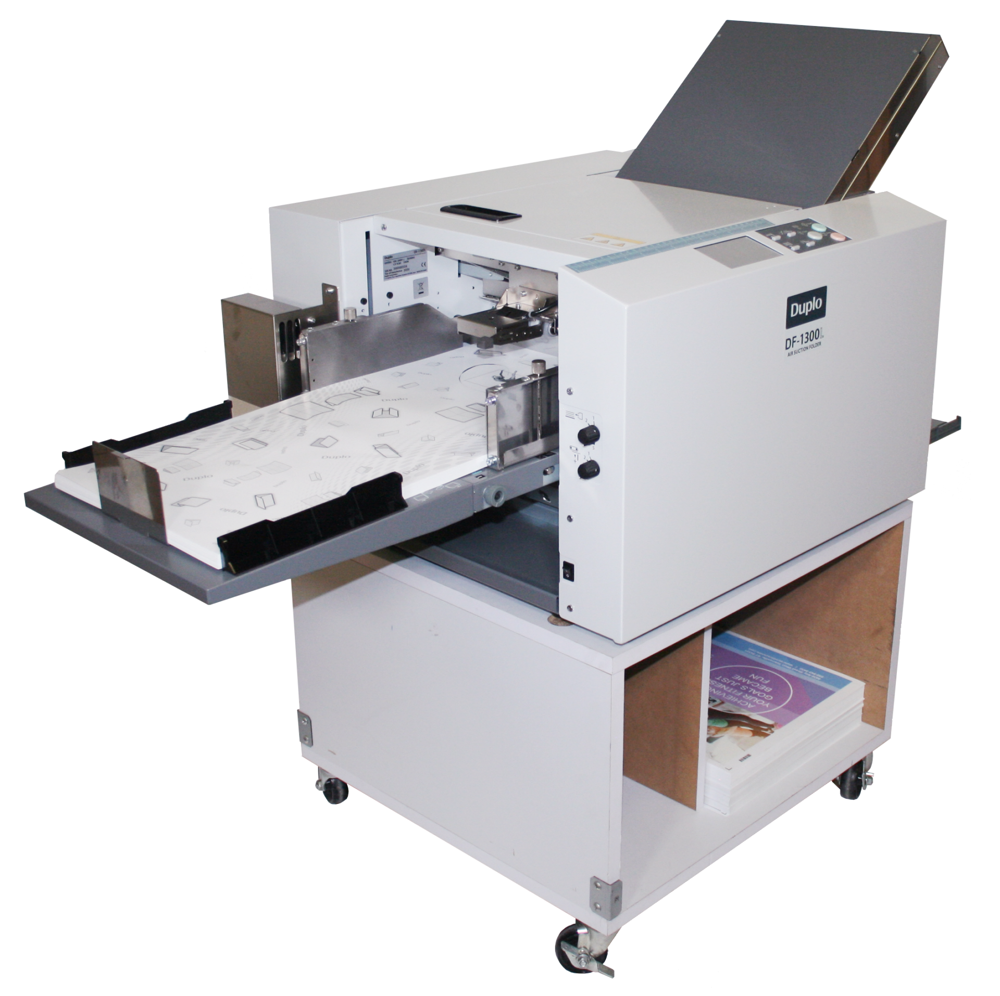
Duplo DF-1300L
648 mm Uzun Tabaka Desteği ve Kuşe Kağıtlar İçin Çiziksiz Vakumlu Hava Emişi
- Vakumlu hava emişli besleme kafası, sürtünmeli lastiklerin kuşe kağıtta bıraktığı izleri engeller.
- 648 mm'ye varan uzun tabaka desteği ile 6 panelli A4 akordiyon katlamalı broşürleri tek seferde katlar.
- Dakikada 310 tabakaya varan üretim hızı ile yoğun matbaa ve kopyalama merkezlerinin gözdesidir.
| Maksimum Ebat | 311 x 648 mm uzun A3 |
| Maksimum Hız | 310 tabaka / dakika |
| Besleme Tipi | Vakumlu hava emişli (Air suction) |
| Katlama Tipleri | Tek, mektup, zikzak, çift, kapı, akordiyon |
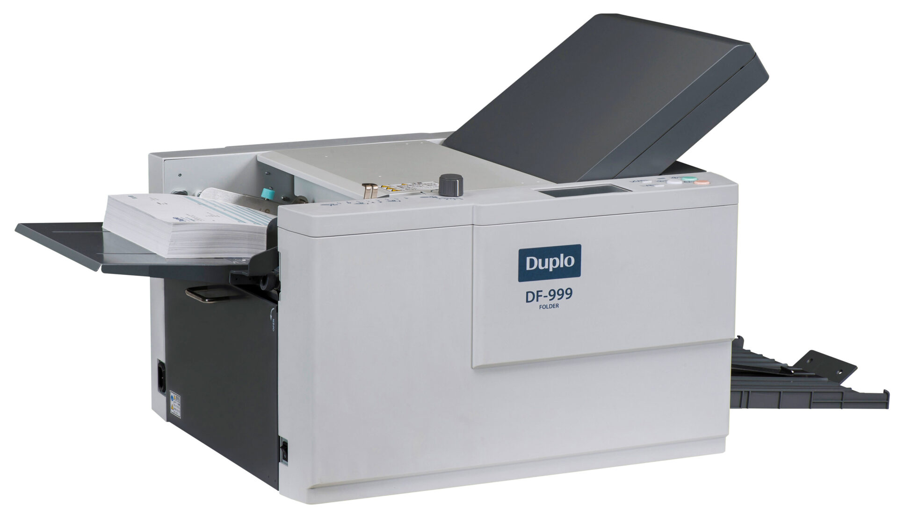
Duplo DF-999 / 990 / 870 / 850
Masaüstü Profesyonel Katlama, Renkli Dokunmatik Panel ve Ultrasonik Sensör
- DF-999 & DF-990: 260 tabaka/dk rekor hız, ultrasonik çift sayfa algılama ve sessiz gövde.
- DF-870 & DF-850: Kompakt masaüstü tasarımı, otomatik motorlu çanta ayarı ve 241 sayfa/dk verim.
- Fatura, sözleşme, bülten ve el ilanı katlamada personel zamanını sıfıra indirir.
| Hız Aralığı | 241 - 260 tabaka / dakika |
| Kağıt Boyutları | A3, A4, A5, B4, B5 ve özel ebatlar |
| Sensör Teknolojisi | Ultrasonik çift tabaka dedektörü (DF-999) |
| Tepsi Kapasitesi | 500 tabaka yükleme tepsisi |
Zorlu dijital baskılı kuşe ve sentetik malzemeler için patentli Orbital PUR kapalı nozüllü ciltleme sistemi
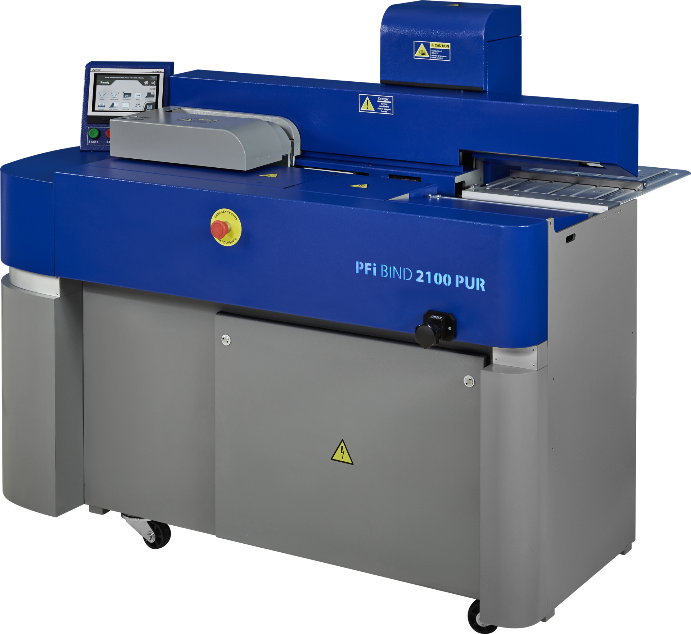
Duplo PFi BIND 2100 PUR
Patentli Orbital PUR Nozül Sistemi İle Sıfır Temizlik ve Kopmaz Cilt Gücü
- Açık tutkal haznesi yerine kapalı tüp sistemi kullanır; günlük saatler süren zahmetli temizliği ortadan kaldırır.
- Ağır tonerli, laklı veya sentetik kuşe kağıtları ömür boyu yaprak dökmeyecek güçte yapıştırır.
- Otomatik kapak besleme ve kitap kalınlığını ölçerek pilyaj ayarını kendisi yapan akıllı sistem.
- Saatte 290 kitaba kadar üretim ile butik ve seri kitap basımlarında kusursuz netice verir.
| Maksimum Hız | 290 döngü / saat |
| Kitap Kalınlığı | 1 mm'den 40 mm'ye kadar (10 - 800 sayfa) |
| Maksimum Blok Ebadı | 320 x 360 mm |
| Tutkal Teknolojisi | Poliüretan Reaktif (PUR) kapalı orbital nozül |
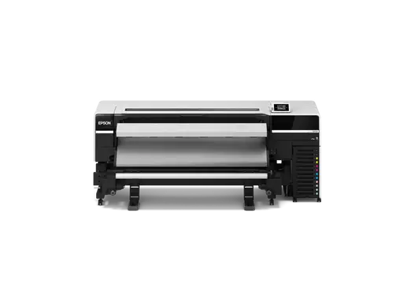
Epson SureColor SC-S9100 / SC-S8100
Tabela ve Araç Giydirmede Dünya Standardı Renk Doğruluğu
- UltraChrome GS3 mürekkep seti: Kırmızı, Turuncu, Açık Siyah ve Metalik/Beyaz seçenekleri.
- Pantone renklerinin %98.2'sine ulaşan sektörün en geniş renk uzayı.
- GreenGuard Gold sertifikası sayesinde hastane ve okullar gibi hassas iç mekanlarda güvenli kullanım.
- Otomatik gergi kontrollü hassas sarma motoru ile rulo boyu sıfır sapma.
| Baskı Eni | 162.6 cm (64 inç) |
| Baskı Kafası | PrecisionCore Micro TFP piezo kafalar |
| Çözünürlük | 1440 x 1440 dpi fotogerçekçi kalite |
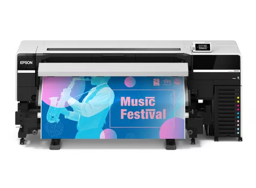
Epson SureColor SC-T3405 / SC-T5405
Mimari CAD, Mühendislik Çizimleri ve Perakende Poster Yazıcısı
- UltraChrome XD2 pigment mürekkepler ile şantiyede yağmurda akmayan, fosforlu kalemde dağılmayan çizgiler.
- Bir adet A1 teknik çizimi sadece 22 saniyede basan süper yüksek hız.
- Entegre tarayıcılı MFP modelleri ile eski paftaları tek tuşla 600 dpi tarama ve çoğaltma.
| Hız | 22 sn / A1 sayfa |
| Formatlar | 24 inç (T3405) ve 36 inç (T5405) |
| Mürekkep | Suya dayanıklı 4 renk pigment XD2 |
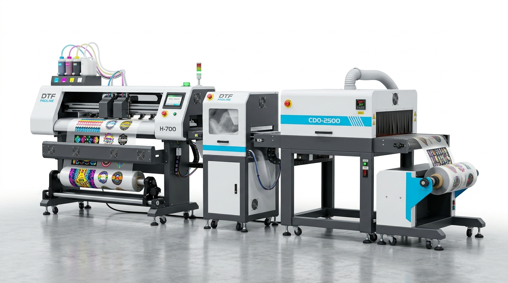
Sutec DTF 3200 (Direct-to-Film) Hattı
Kalıpsız, Ayıklamasız Tüm Kumaşlara Yüksek Dayanımlı Transfer Baskı
- Yazıcı, otomatik toz serpme, IR fırınlama ve sarma ünitesi tek kompakt hatta entegre.
- Pamuk, polyester, denim, polar, deri ve naylon kumaşlara sorunsuz transfer.
- Flekso folyolardaki gibi ayıklama zahmeti yok; sadece desen kumaşa yapışır.
- Aktif beyaz boya sirkülasyonu ile tıkanmasız, canlı ve esnek baskı sonucu.
| Baskı Eni | 60 cm film genişliği |
| Baskı Kafaları | 2 veya 4 adet Epson i3200 |
| Sistem Bileşenleri | Yazıcı + Tozlama + IR Fırın + Otomatik Sarıcı |
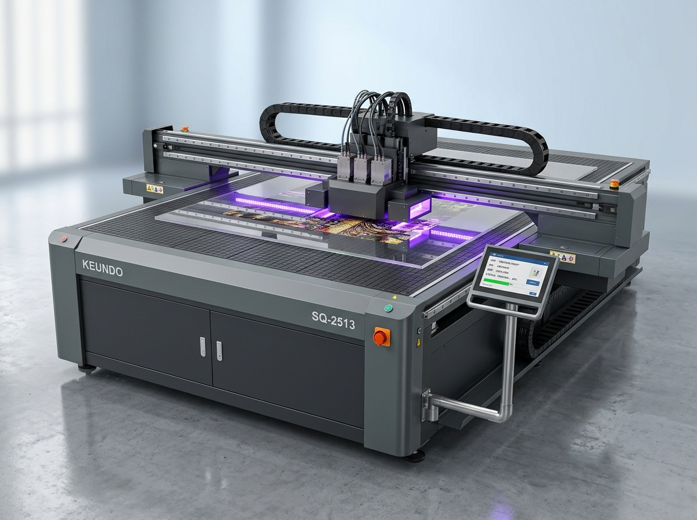
Sutec Endüstriyel Flatbed UV Serisi
Yüksek Hassasiyetli Gövde ve Rekabetçi Üretim Maliyetleri
- Lidya Grup mühendisliğiyle Türkiye pazarının zorlu şartlarına göre konfigüre edilmiş yapı.
- Ahşap, pleksi, deri, metal ve hediyelik eşyalar için dayanıklı ve çizilmez baskılar.
- %100 yerel ve kesintisiz teknik servis, boya ve parça güvencesi.
| Uygulama | Promosyon, tabela, mimari dekorasyon |
| Teknoloji | LED UV soğuk kürleme |
| Destek | Lidya Grup 7/24 Teknik Servis |
Kalıpsız (dieless) üretim, otomatik vakumlu tabaka besleme, CCD kamera + QR kodla anında iş tanıma, operatörsüz (unattended) çalışma
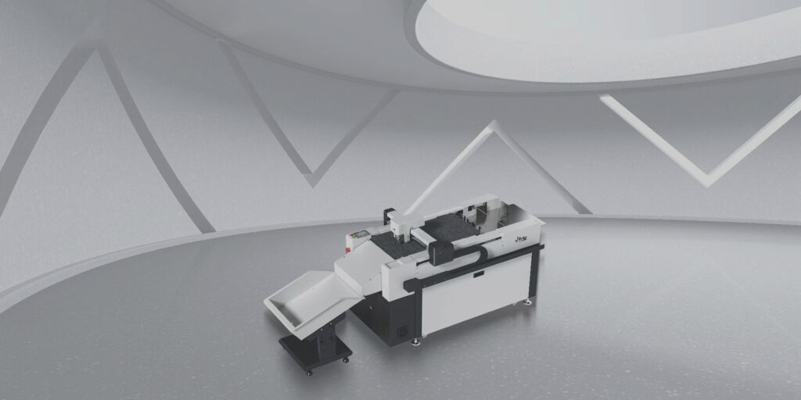
JWEI LST03-0604-RM
Kompakt Alanda Kalıpsız Kutu, Prototip ve Etiket Üretim Gücü
- Otomatik vakumlu besleyici ile tabakaları desteden tek tek alıp kesim alanına sürer.
- Kalıp maliyeti olmadan etiket, çıkartma, kozmetik ambalajı ve prototip kutu üretir.
- Salınımlı bıçak (EOT), kiss-cut yarım kesim ve kırım tekeri ile çok fonksiyonludur.
- CCD optik kamera baskı kroslarını ve QR kodları okuyarak sıfır kayma sağlar.
| Çalışma Alanı | 600 x 400 mm |
| Maks. Kesim Hızı | 1500 mm/saniye (±0.1 mm) |
| Maks. Kalınlık | 10 mm (Karton, mikrodalga, etiket) |
| Besleme Tipi | Otomatik vakumlu asansör (≤100 mm) |
| Yazılım | JWPS (1000+ hazır kutu şablonu) + JWCS |
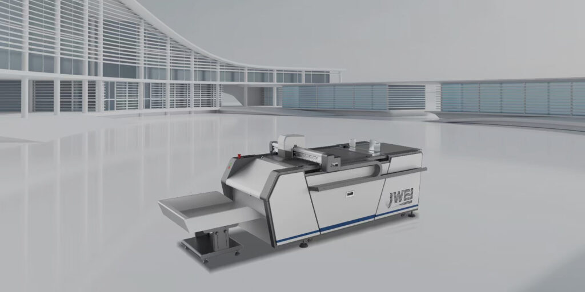
JWEI LST03Ⅱ-0806-RM
B2 Formatında Tam Otomatik, İnsansız (Unattended) Dijital Ambalaj Üretimi
- Otomatik vakumlu besleme, kesim ve toplama süreçlerini birleştirerek insansız çalışır.
- %95'e varan otomatik alma başarısı ile tabakaları istiften besler ve alıcı tablaya dizer.
- QR kod okuma ile farklı ebat ve tasarımdaki işleri kesintisiz art arda işler.
- EOT salınımlı bıçak, kiss-cut, V-cut ve kırım tekeri ile çoklu takım kafası.
| Çalışma Alanı | 800 x 600 mm (B2 Tabaka) |
| Hız & Hassasiyet | 1500 mm/s | ±0.1 mm |
| İşlem Hızı | 15 – 45 saniye / tabaka |
| Takım Sistemi | Multi-tool: EOT, Kiss-cut, V-cut, Creasing |
| Besleme / İstif | ≤100 mm otomatik asansör + otomatik toplama |
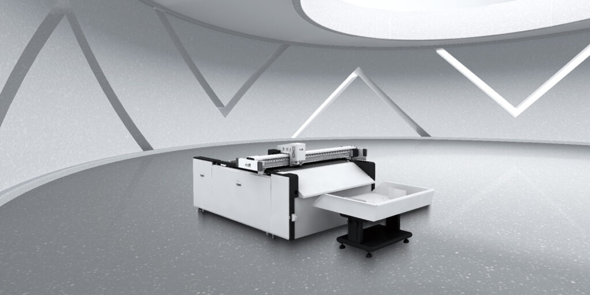
JWEI LST03Ⅱ-0912-RM
900 x 1200 mm Geniş Kesim Alanında Kalıpsız Endüstriyel Kutu İmalatı
- 900 x 1200 mm geniş tablası ile 70x100 cm ve daha büyük ofset tabakalarını rahatça işler.
- Büyük boy kargo kolileri, mikrodalga ambalajlar ve stand parçalarını tek seferde keser.
- CCD kamera pozalaması ve 1000'den fazla parametrik kutu şablonu kütüphanesi.
- Otomatik yükleme asansörü ve toplama tablası ile vardiyalı kesintisiz üretim.
| Çalışma Alanı | 900 x 1200 mm |
| Hız & Hassasiyet | 1500 mm/s | ±0.1 mm |
| Maks. Kalınlık | 10 mm (Karton, mikrodalga, fotoblok) |
| Otomasyon | Otomatik yükleme + kesim + otomatik boşaltma |
| Takımlar | EOT, Teğetsel bıçak, V-Cut, Kırım tekeri |
1800 mm/s hız, ±0.05 mm hassasiyet, 50 mm kalınlık, zonlu güçlü vakum tablası, CCD kamera ve 1kW freze router desteği
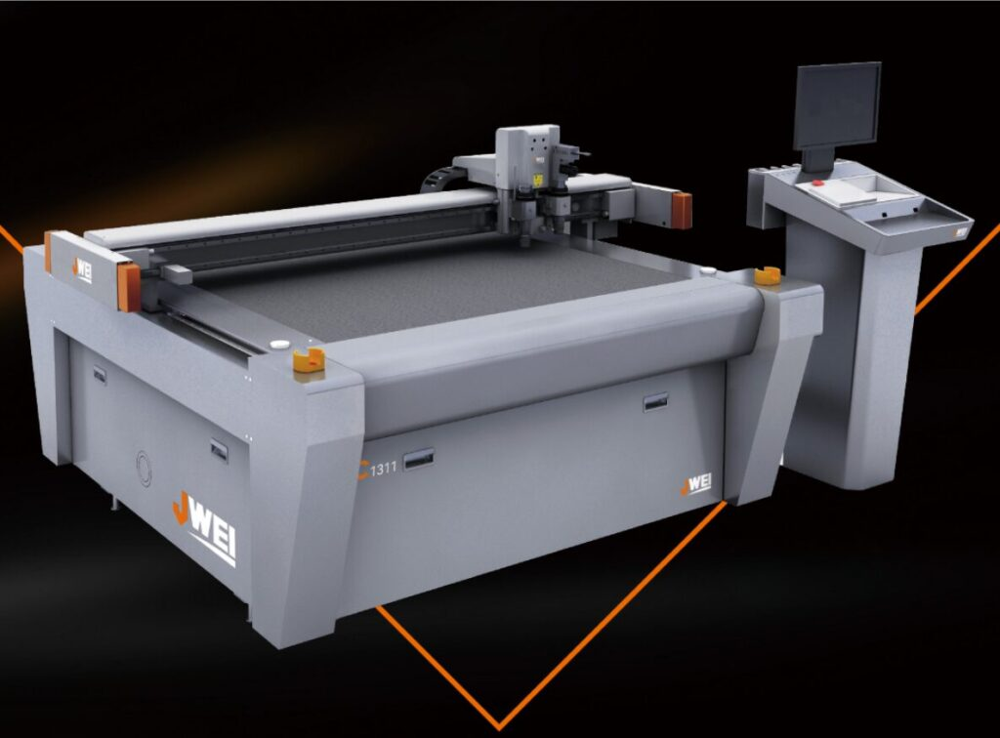
JWEI SC1311
1300 x 1100 mm Kompakt Alanda 1800 mm/s Yüksek Hassasiyetli Kesim & Freze
- Kompakt baskı merkezleri ve prototip laboratuvarları için ideal yer tasarruflu tasarım.
- Salınımlı bıçak, teğetsel bıçak, kırım tekeri ve 1kW freze router modülü tek masada.
- Lazer takım sıfırlama sensörü ile bıçak ve freze boyunu otomatik sıfırlar.
| Çalışma Alanı | 1300 x 1100 mm |
| Hız & Hassasiyet | 1800 mm/s | ±0.05 mm |
| Maks. Kalınlık | 50 mm |
| Takımlar | EOT/POT Salınımlı, Teğetsel, Freze, Kırım |
| Pozalama | Endüstriyel CCD Optik Kamera |
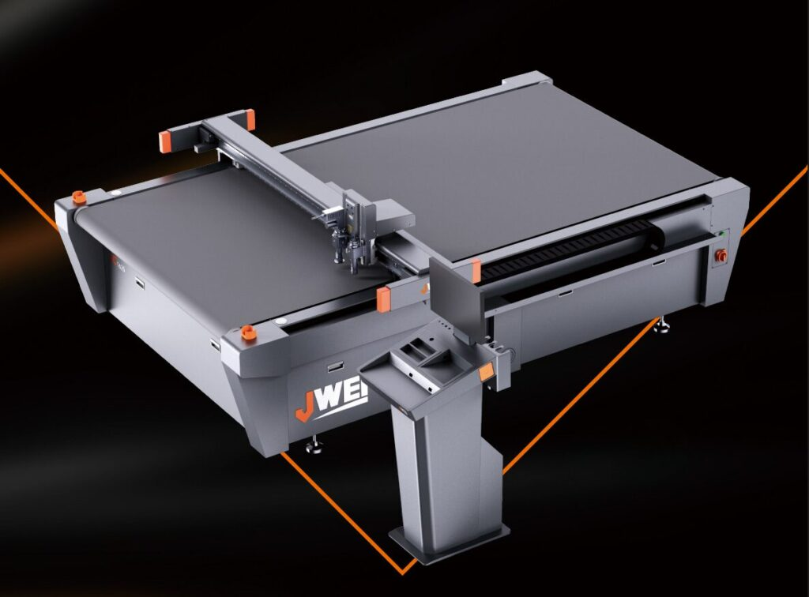
JWEI SC1325
1300 x 2500 mm Standart Levha Formatında Güçlü Endüstriyel Çözüm
- Standart 1.25 x 2.50 metre reklam ve tabela levhalarını bölmeden tek seferde işler.
- Titreşimi sıfıra indiren ağır çelik gövdesi ile frezelemede pürüzsüz kenar kalitesi.
- Zonlu matris vakum tablası ile küçük parçaları masaya kuvvetle yapıştırır.
| Çalışma Alanı | 1300 x 2500 mm |
| Hız & Hassasiyet | 1800 mm/s | ±0.05 mm |
| Maks. Kalınlık | 50 mm |
| Takımlar | EOT, POT, V-Cut, Kırım, 1kW/1.8kW Freze |
| Vakum Gücü | Çok bölgeli türbin vakum sistemi |

JWEI SC1618
1600 x 1800 mm Genişlikte Ambalaj, Koli ve POP Teşhir Standı Üretim Merkezi
- 1.6 metre tablası ile orta boy koli ve teşhir standı parçalarını fire vermeden keser.
- POT pnömatik salınımlı bıçağı ile 50 mm kalınlığa kadar petek panelleri ve süngerleri rahatça keser.
- Çeşitli profillerdeki kırım tekerleri ile mukavvada çatlama yapmadan katlama hatları çizer.
| Çalışma Alanı | 1600 x 1800 mm |
| Hız & Hassasiyet | 1800 mm/s | ±0.05 mm |
| Maks. Kalınlık | 50 mm (Petek panel, re-board, fotoblok) |
| Kafa Yapısı | Çift modüllü takım başlığı (POT + Kırım) |
| Pozalama | CCD Kamera (Baskılı mukavvalar için) |
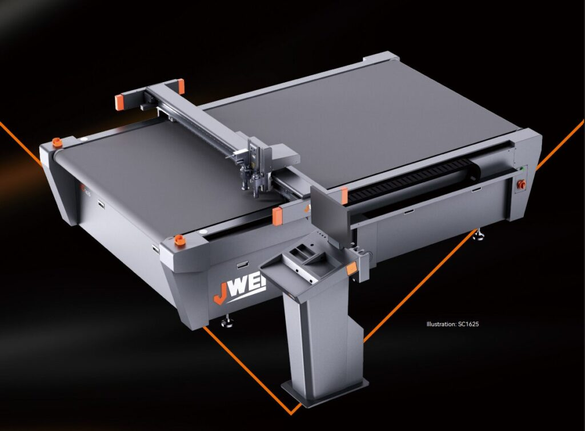
JWEI SC1625
1600 x 2500 mm İdeal Ebatta Matbaa, Reklam ve Endüstriyel İmalat Gücü
- 1600 x 2500 mm ebadı ile piyasadaki tüm standart plaka ve rulo baskı formatlarına tam uyumludur.
- Hem dijital baskılı karton ambalajı hem de 20 mm pleksi/kompoziti aynı gün kesebilir.
- Havacılık sınıfı petek vakum tablası ve Japon servo motorlar ile uzun ömürlü kararlılık.
| Çalışma Alanı | 1600 x 2500 mm |
| Hız & Hassasiyet | 1800 mm/s | ±0.05 mm |
| Maks. Kalınlık | 50 mm |
| Takım Yelpazesi | EOT, POT, V-Cut, Kırım Tekeri, 1kW Freze |
| Şase & Ağırlık | 3400 x 2300 x 1250 mm / 1100 kg |
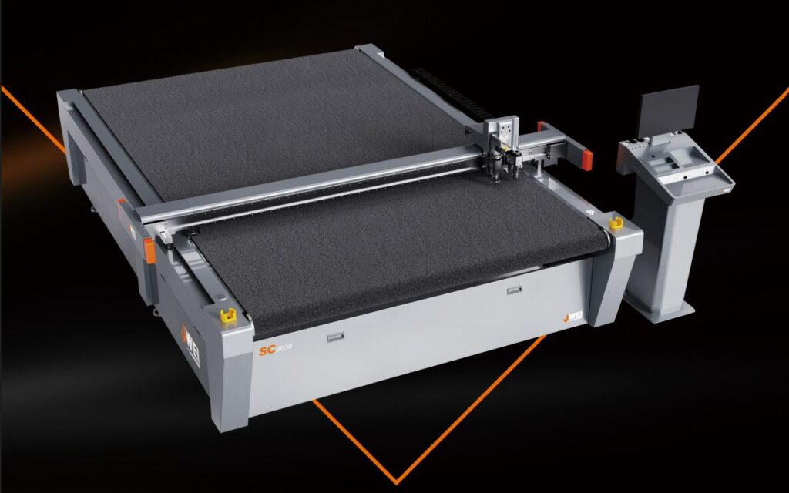
JWEI SC2030
2000 x 3000 mm Devasa Alanda Ağır Hizmet Tipi Endüstriyel Kesim & Freze
- Piyasadaki en büyük standart levha boyutu olan 2x3 metre malzemeleri kesintisiz bağlar.
- Ağır portal yapısı 1800 mm/s hızda sıfır esneme ile pürüzsüz kavis ve açılar üretir.
- Çift motorlu yüksek debili endüstriyel vakum sistemi ile küçük parçaları dahi uçurmaz.
| Çalışma Alanı | 2000 x 3000 mm |
| Hız & Hassasiyet | 1800 mm/s | ±0.05 mm |
| Maks. Kalınlık | 50 mm |
| Güç & Voltaj | 380V ±10% / 50Hz, 11 kW |
| Ebat & Ağırlık | 3900 x 2800 x 1250 mm / 1450 kg |
2000 mm/s ultra hız, konveyörlü yükleme-boşaltma hatları, AI Cutting Assistant, otomatik takım değiştirici (ATC), MES fabrika entegrasyonu
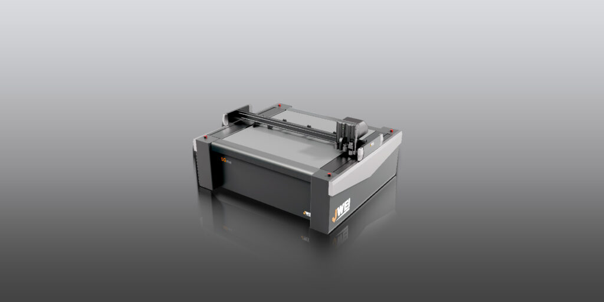
JWEI SG1311
1300 x 1100 mm Alanda 2000 mm/s Ultra Hız ve Sürekli Konveyörlü Otomasyon
- 2000 mm/s maksimum kesim hızı ile standart kesim masalarına göre %40 daha hızlı üretim.
- Konveyörlü bant tablası malzemeyi otomatik içeri çeker ve kesim bitince dışarı taşır.
- Akıllı AI algoritması köşelerde hız optimizasyonu yaparak malzemeyi korur.
| Çalışma Alanı | 1300 x 1100 mm |
| Maks. Hız | 2000 mm/s (±0.05 mm) |
| Masa Yapısı | Konveyörlü Vakum Tablası |
| Takım Sistemi | 2 veya 3 Takım Kafası (Modüler) |
| MES Desteği | Akıllı CNC Platformu + Fabrika ERP Bağlantısı |
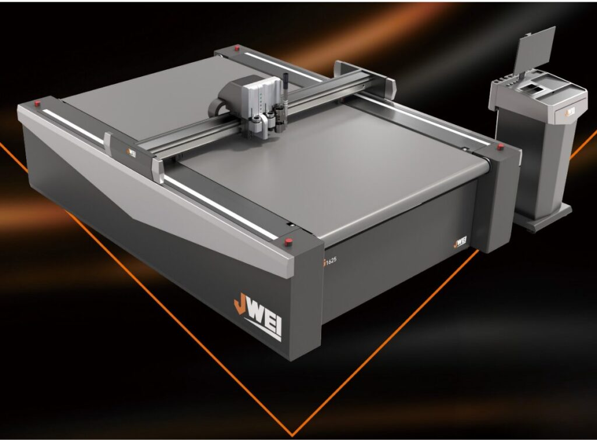
JWEI SG1612
1600 x 1200 mm Genişlikte 2000 mm/s Hız ve Kesintisiz Konveyör Akışı
- 160 cm enindeki tekstil, bayrak kumaşı ve vinil ruloları aralıksız işler.
- Opsiyonel otomatik rulo besleme ünitesi ile operatörsüz rulo açma ve kesim.
- Ultra hızlı CCD kamera ile baskılı kumaş desenlerini deformasyonsuz okur.
| Çalışma Alanı | 1600 x 1200 mm |
| Hız & Hassasiyet | 2000 mm/s | ±0.05 mm |
| Maks. Kalınlık | 50 mm |
| Takım Seçenekleri | POT Pnömatik, EOT, Router, Döner Bıçak |
| Voltaj | 380V ±10% / 50Hz |

JWEI SG1625 Otomatik Hat
Otomatik Yükleme, Kesim ve İstifleme Boşaltmalı Endüstriyel Amiral Gemisi
- Robotik vakumlu yükleme tablası → 2000 mm/s konveyörlü kesim masası → otomatik istifleme boşaltma masası.
- AI Cutting Assistant algoritması bıçak aşınmasını ve kesim rotasını optimize eder.
- Otomatik takım değiştirici (ATC) ile freze ve bıçak uçlarını operatörsüz değiştirir.
- MES/ERP fabrika entegrasyonu ve NFC operatör yetkilendirmesi.
| Çalışma Alanı | 1600 x 2500 mm |
| Hız & Hassasiyet | 2000 mm/s | ±0.05 mm |
| Hat Mimarisi | Vakumlu Yükleyici + Konveyör Masa + İstifleyici |
| Freze Gücü | 1.8 kW Yüksek Hızlı Router Motoru |
| Akıllı Özellikler | AI Cutting Assistant + ATC + NFC Giriş |

JWEI SG1635
1600 x 3500 mm Geniş Çalışma Alanında 2000 mm/s Hız ile Uzun Levha Üretimi
- 3.5 metre boyundaki mimari kompozit, cephe panelleri ve displayleri kesintisiz işler.
- Sıfır boşluklu helisel kremayer ve lineer kılavuzlar ile 3.5 metre boyunca mikron sapmasız kesim.
- MES bağlantısı ve NFC kartlı operatör güvenlik erişimi.
| Çalışma Alanı | 1600 x 3500 mm |
| Hız & Hassasiyet | 2000 mm/s | ±0.05 mm |
| Maks. Kalınlık | 50 mm |
| Takımlar | POT/EOT Salınımlı, 1.8kW Freze, V-Cut, Kırım |
| Voltaj | 380V 3 Faz / 50Hz |

JWEI SG2132
2100 x 3200 mm Süper Geniş Ebatta 2000 mm/s Ultra Hızlı Ağır Sanayi CNC Kesim
- 2.1 x 3.2 metre tablası ile Türkiye'deki en büyük kompozit levhaları tek seferde masaya bağlar.
- Alüminyum kompozitte 90 derece büküm derzleri açar, pleksiyi frezeler, contayı salınımlı bıçakla keser.
- Güçlü vakum petek zonları ile geniş malzemeleri mükemmel sabitler.
| Çalışma Alanı | 2100 x 3200 mm |
| Hız & Hassasiyet | 2000 mm/s | ±0.05 mm |
| Maks. Kalınlık | 50 mm |
| Takım Sayısı | 2 veya 3 Takım Yuvası + Freze |
| Güç Tüketimi | 380V ±10% / 50Hz, 15 kW |
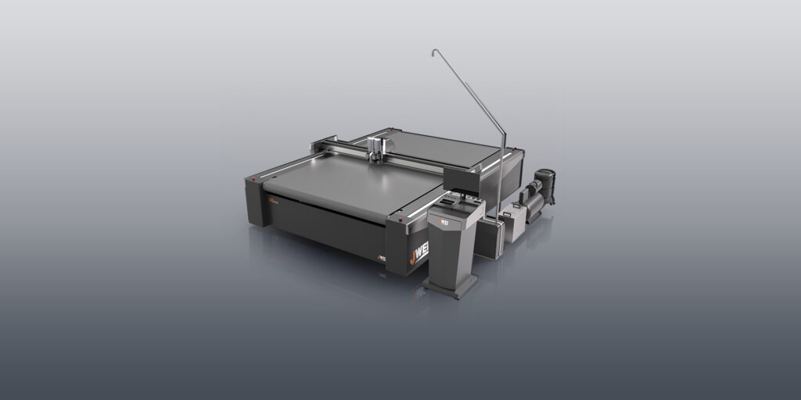
JWEI SG3216
3200 x 1600 mm Formatında 3.2 Metrelik Levhaları Enlemesine Hızla İşleyen Güç
- 3.2 metrelik plakaları operatörün kolayca yükleyebilmesi için enlemesine yerleştirir.
- 2000 mm/s hız ve CCD kamera ile geniş format baskılı afiş, tabela ve levhaları saniyeler içinde sıfırlar.
- Havacılık standardı vakum emişi ile malzeme dalgalanmalarını sıfırlar.
| Çalışma Alanı | 3200 x 1600 mm |
| Hız & Hassasiyet | 2000 mm/s | ±0.05 mm |
| Maks. Kalınlık | 50 mm |
| Takım Sistemi | 2 veya 3 Takım Kafası (POT, EOT, Freze, Kırım) |
| Voltaj | 380V ±10% / 50Hz |

JWEI SG3232
3200 x 3200 mm Devasa 10 m² Kare Format Endüstriyel CNC Kesim Sistemi
- 10.24 metrekare devasa tek parça kesim alanı ile SG serisinin en büyük modelidir.
- Devasa cephe kaplamaları, havalimanı ve AVM tabelalarını bölmeden tek parçada işler.
- Otomatik takım değiştirici (ATC), MES entegrasyonu ve 18 kW toplam güç kapasitesi.
| Çalışma Alanı | 3200 x 3200 mm (10.24 m²) |
| Maks. Kesim Hızı | 2000 mm/s (±0.05 mm) |
| Maks. Kalınlık | 50 mm |
| Takım & ATC | POT, EOT, Güçlü Freze Router + Otomatik Takım Değiştirici |
| Güç Tüketimi | 380V ±10% / 50Hz, 18 kW |
Sektörel İhtiyaç & Makine Seçim Rehberi
Doğru iş modeli için Lidya Grup portföyünden önerilen ideal makine kombinasyonları:
| Sektör / Üretim İhtiyacı | Önerilen Birincil Makine | Tamamlayıcı / Sonlandırma Çözümü | Temel Avantaj |
|---|---|---|---|
| Lüks Kutu, Davetiye & Ambalaj | Xerox Iridesse™ (6 Renk Metalik) | Duplo DuSense DDC-810 (3D Lak & Folyo) | Altın, gümüş, dokusal lak ile katma değerli yüksek karlı üretim |
| Yüksek Hacimli Matbaa (Katalog/Broşür) | Xerox Versant® 4100 Press | Duplo DC-648 Slitter/Cutter/Creaser | Kuşe kağıtlarda çatlamayan kırım, sıfır ayar süresi ve tam otomasyon |
| Oluklu Mukavva & Koli Ambalaj | EFI™ Nozomi 14000 LED / AQ | Flora XTRA 3220LED Plaka Baskı | Tek geçişli dakikada 75m hız, kalıpsız anında kutu üretimi |
| Büyük Reklam Panoları & Bina Giydirme | Flora XTRA 5000H (5m Hibrit) | EFI Pro 32r+ (3.2m LED UV) | Saatte 440 m² üretim ve aynı anda çoklu rulo besleme |
| Sert Plaka Baskısı (Cam/Ahşap/Pleksi) | Keundo SQ-2513 UV Flatbed | Keundo K6090UV (Kompakt/Şişe) | Ricoh Gen6 kafa hassasiyeti, hava yastıklı masa ve 3D kabartma |
| Hem Rulo Hem Sert Levha (Hibrit) | EFI™ Pro 30h+ Hibrit LED | Keundo SQ-3200H Hibrit UV | 5 cm kalınlığa kadar levhalar ile rulo vinile tek makinede baskı |
| Araç Kaplama & Premium Tabela | Epson SureColor SC-S9100 | Keundo K2-18S Eko-Solvent | Pantone %98.2 renk kapsamı, 10 renk kokusuz eko-solvent boyalar |
| Kalıpsız Etiket & Kutu Kesimi | Duplo PFi Blade B2+ | Duplo DC-618 Sonlandırıcı | Kalıp masrafı olmadan bilgisayardan anında prototip ve seri kesim |
| Tişört, Forma & Tekstil Transferi | Sutec DTF 3200 Entegre Hat | Epson Geniş Format Destek | Pamuklu ve sentetik tüm kumaşlara firesiz, ayıklamasız 60°C dayanımlı baskı |
| Kitap & Dergi Ciltleme | Duplo PFi BIND 2100 PUR | Duplo DBM-700 Kitapçık Hattı | Dağılmayan PUR tutkallı ciltleme ve saatte 5.200 adet tel dikişli kitapçık |